← 回股市觀察
盤中觀察 每日盤中觀察
2026/10/13 12:30 即時快照 · 當日盤中成交金額前 50 檔（上市 35＋上櫃 15）· 公開資料整理
48,463.66
加權指數 -838.30 點（-1.70%）
這是盤中快照，不是收盤結果。資料時間 2026-10-13 12:30:59（TWSE MIS 即時行情，上市／上櫃皆 delay=0）。
13:30 收盤（含最後一盤集合競價）會再變動；量能是以「已過交易時間比例」推估（尾盤大量時會低估）；
技術面標籤是把盤中現價代入原本以收盤價設計的規則（日線歷史只到前一交易日 9/14）。
統計範圍：候選池＝20261012 與 20261008 收盤成交值前段（上市 250／上櫃 130）取聯集，共 431 檔；再以今日盤中累計成交金額排序取
上市前 35＋上櫃前 15。漲跌家數是候選池內的數字，不是全市場（即時全市場家數證交所沒有開放端點）。
本頁為公開資料的整理與觀察，不構成投資建議，不報牌、不預測、不下買賣決策。
時程紀錄（本日盤中分析）▾ 點擊展開▴ 點擊收合
| 階段 | 時間 |
|---|
| 任務開始 | 由排程自動觸發（週一～週五 12:30） |
| 分析腳本執行 | 12:30:25 → 12:30:59（34.1 秒） |
| 資料快照時間 | 2026-10-13 12:30:59（行情時間戳 12:30:46） |
| 本頁產出 | 見頁尾版本時間 |
逐階段 log：
| 12:30:25 | START 盤中分析開始 |
| 12:30:25 | ① 抓即時指數（tse_t00 / otc_o00） |
| 12:30:25 | ② 建立候選池（20261012 與 20261008 成交值前段，上市＋上櫃） |
| 12:30:25 | 候選池共 431 檔 |
| 12:30:25 | ③ 抓即時候選池行情 |
| 12:30:58 | 取得即時報價 431 檔 |
| 12:30:58 | 候選池漲跌：漲 96／跌 327／平盤 8（快照時間 12:30:46） |
| 12:30:58 | ④ 選出 70 檔（上市 50＋上櫃 20），門檻 24.75 億 |
| 12:30:58 | ⑤ 抓日線歷史並算技術面 |
| 12:30:59 | ⑥ 產出（70 檔） |
K 線圖怎麼看：每一檔都附 K 線圖 —— 黃圈是轉折低點、粉圈是轉折高點（
虛線圈代表還沒確認的轉折）、藍線是月線（20 日均線）；頸線取最近兩個轉折低點之間的最高轉折高點，
突破頸線才會標示。
圖上另有兩條水平虛線、左側標數值：高點頸線（紅，最近兩個轉折低點之間的最高轉折高點）與低點頸線（綠，最近兩個轉折高點之間的最低轉折低點）；樣本不足就不畫。
紅色 K 棒＝收盤高於開盤、綠色＝收盤低於開盤。
大盤趨勢快篩（加權指數）（盤中近似） 資料日 2026/10/12・來源：證交所公開資料
主狀態：突破頸線且帶量
前一交易日對照（10/08）：突破頸線且帶量（量比 20 1.05） → 今日突破頸線且帶量（量比 20 1.01）
指標、數值、判定（點開看 12 項明細：均線位置／排列、月線方向、頸線、轉折結構、位階、量價…）
加權指數今天跌 11.48 點（-0.02%），收 49,301.96、站上月線 47,793.78；月線還在上彎，MA5 這條短均還沒收復，已站上高點頸線 49,285.22。
- 均線位置：4 條均線站上 3 條；沒站上的是 MA5 49,591.27（收盤比它低 0.58%）
- 月線方向：月線 MA20 現在 47,793.78，比 5 個交易日前高 696.61 點 → 上彎
- 量能：集中市場成交 8,945.2 億，比 5 日均量少一些（0.89 倍）、跟 20 日均量差不多（1.01 倍）
- 關鍵價位：高點頸線 49,285.22已突破；低點頸線 44,639.15，還在下方 10.45%
- 大小型股：加權 -0.02%、櫃買 +0.28%，方向相反（大型股與小型股不同調）
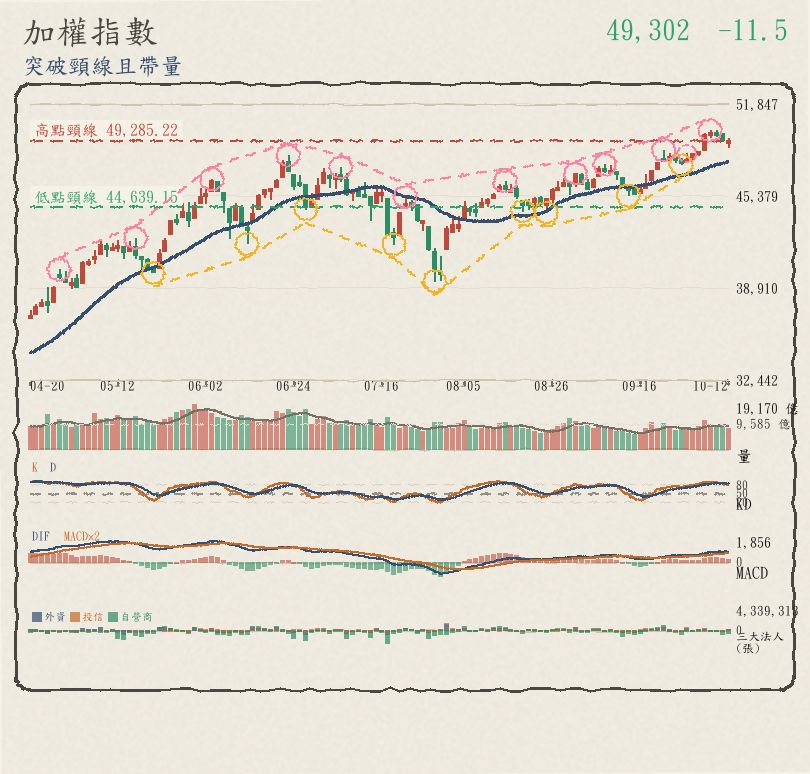
圖說：加權指數日 K（與個股圖相同標記）：黃圈＝轉折低點、粉圈＝轉折高點、虛線小圈＝還沒確認的轉折、藍線＝月線 MA20、水平虛線＝高點／低點頸線。最後一根是資料日當天。
本區塊為公開資料的技術面觀察，不構成投資建議，
不報牌、不預測、不下買賣決策。成交金額為集中市場總成交金額（含 ETF／權證），
與頁首摘要的「上市個股成交金額」口徑不同。標籤是統計，不是評分、也不是推薦。
上市 vs 上櫃（同期快篩）
加權 -0.02% vs 櫃買 +0.28%（方向相反，大小型股背離） → 方向相反（大小型股背離）
（兩個市場分開寫，不合併成一個數字；櫃買為 TPEX 公開資料）
櫃買歷史：TPEX 逐日回補 130 根；來源：櫃買中心 www/zh-tw/indexInfo/sectinx（逐日，官方；OpenAPI tpex_index 只回當月）
（TPEX OpenAPI 只回當月，故逐日回補；歷史不足就不算該條均線並標「資料不足」，不用錯數字）
近 20 個交易日大盤狀態回溯（最新在上）（點開看逐日主狀態／量比／量價象限）
用同一支程式回算最近 20 個交易日（主狀態 S1~S8 與量比 20 皆為當日收盤當時的判定，
不是事後調整）；量比 20 未公布的日子寫「—」。
好條件最多的（前 10）
不好條件最多的（前 10）
好條件（8 項）：站上月線、月線向上、底底高、頭頭高、突破頸線、相對大盤強、攻擊量（量增＋上漲）、守住今日高檔（距今日高點 1% 內）。
不好條件（8 項）：跌破前低、今日下跌、相對大盤弱、在月線之下、量增下跌（出貨）、貼近今日低點（1% 內）、跌破昨日低點、月線下彎。
兩邊都是同一組日線資料＋盤中即時價算出來的「符合項目數」，只是把方向相反的條件分開數；
條件數不是評分或推薦，不構成投資建議。
逆勢上漲（加權下跌、個股上漲）（14 上市 11／上櫃 3）
盤中爆量（估量比 ≥ 1.5）（33 上市 25／上櫃 8）
跌破前低（線型轉弱）（12 上市 10／上櫃 2）
今日疲弱（跌幅前 10）（10 上市 7／上櫃 3）
逐檔（70 檔，依盤中成交金額排序）
台積電 2330 上市
2500 -40.0（-1.57%）
區間或轉弱 盤中成交值 591.2 億・全榜第 1 名（上市第 1 名）・相對大盤 +0.13
好條件 5/8：站上月線、月線向上、突破頸線、相對大盤強、守住今日高檔（距今日高點 1% 內）
不好條件 4/8：今日下跌、量增下跌（出貨）、貼近今日低點（1% 內）、跌破昨日低點
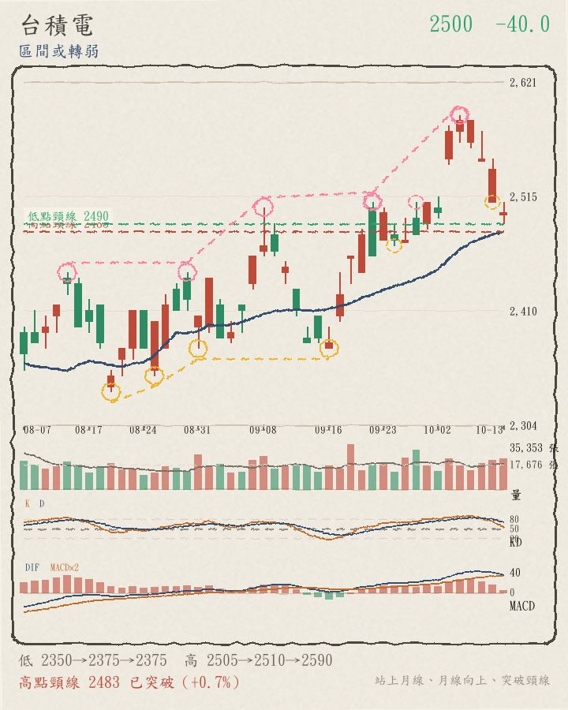
12:30 盤中 2500（-1.57%），比加權指數強 0.13 個百分點、站上月線 2480.25，已突破高點頸線 2483，轉折還沒走出明顯方向。
- 月線位置：現價 2500 在月線 2480.25 之上（+0.8%）；5 日線 2567 也在月線之上（短均在上）；月線向上
- 量能：以已過交易時間推估，今天成交量約是 20 日均量的 1.57 倍（爆量），比 20 日均量大不少；下跌卻量增，量價背離
- 關鍵價位：高點頸線 2483 已站上；前一交易日高點 2550（低於 2.0%）；今天盤中高點 2510（低於 0.4%）；今天盤中低點 2490（高於 0.4%）
- 轉折結構：低點 2350、2375、2375 與高點 2505、2510、2590 都沒有明顯遞增，屬於區間震盪或轉弱；還沒確認的轉折低點 09-24 2470、10-12 2510；還沒確認的轉折高點 09-30 2510、10-06 2590（圖上虛線小圈）
南亞科 2408 上市
489.5 -37.5（-7.12%）
高點墊高、底部不穩 盤中成交值 371.22 億・全榜第 2 名（上市第 2 名）・相對大盤 -5.42
好條件 2/8：月線向上、頭頭高
不好條件 5/8：今日下跌、相對大盤弱、在月線之下、量增下跌（出貨）、跌破昨日低點
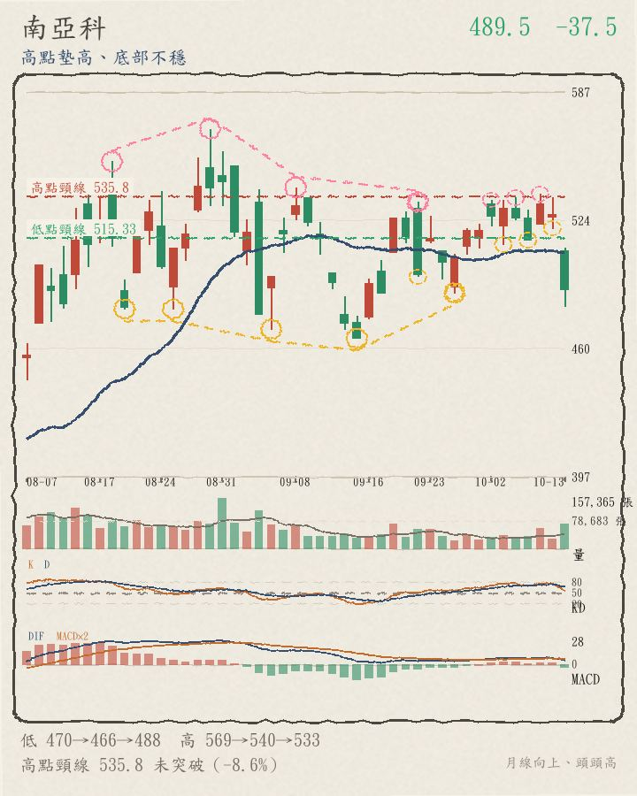
12:30 盤中 489.5（-7.12%），比加權指數弱 5.42 個百分點、跌破月線 509.05，離高點頸線 535.8 還差 8.6%，高點還在墊高（但底部沒同步墊高）。
- 月線位置：現價 489.5 在月線 509.05 之下（-3.8%）；5 日線 525.6 也在月線之上（短均在上）；月線向上
- 量能：以已過交易時間推估，今天成交量約是 20 日均量的 2.33 倍（爆量），比 20 日均量大不少；下跌卻量增，量價背離
- 關鍵價位：高點頸線 535.8 還沒突破，差 8.6%；前一交易日高點 535（低於 8.5%）；今天盤中高點 510（低於 4.0%）；今天盤中低點 481.5（高於 1.7%）
- 轉折結構：高點 569、540、533 墊高（頭頭高），但低點 470、465.5、488 沒有同步墊高；還沒確認的轉折低點 10-07 514、10-12 520；還沒確認的轉折高點 10-06 535、10-08 537（圖上虛線小圈）
大立光 3008 上市
7400 +75.0（+1.02%）
高點墊高、底部不穩 盤中成交值 324.49 億・全榜第 3 名（上市第 3 名）・相對大盤 +2.72
好條件 6/8：站上月線、頭頭高、突破頸線、相對大盤強、攻擊量（量增＋上漲）、守住今日高檔（距今日高點 1% 內）
不好條件 1/8：月線下彎
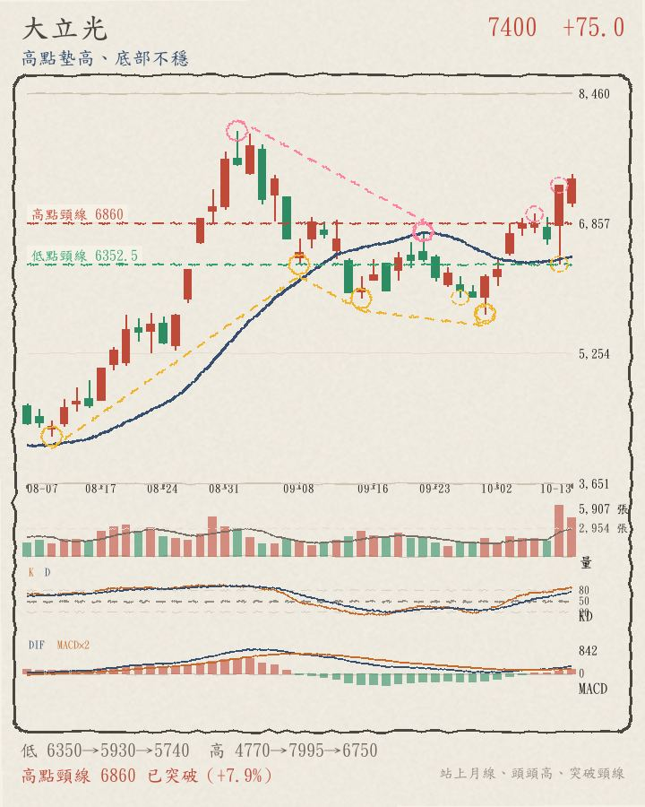
12:30 盤中 7400（+1.02%），比加權指數強 2.72 個百分點、站上月線 6411，已突破高點頸線 6860，高點還在墊高（但底部沒同步墊高）。
- 月線位置：現價 7400 在月線 6411 之上（+15.4%）；5 日線 6883 也在月線之上（短均在上）；月線向下
- 量能：以已過交易時間推估，今天成交量約是 20 日均量的 2.95 倍（爆量），比 20 日均量大不少；上漲又量增，量價配合
- 關鍵價位：高點頸線 6860 已站上；前一交易日高點 7325（高於 1.0%）；今天盤中高點 7460（低於 0.8%）；今天盤中低點 7065（高於 4.7%）
- 轉折結構：高點 4770、7995、6750 墊高（頭頭高），但低點 6350、5930、5740 沒有同步墊高；還沒確認的轉折低點 10-01 5740、10-12 6355；還沒確認的轉折高點 10-07 6970、10-12 7325（圖上虛線小圈）
南亞 1303 上市
315.5 +12.5（+4.13%）
高點墊高、底部不穩 盤中成交值 309.43 億・全榜第 4 名（上市第 4 名）・相對大盤 +5.83
好條件 6/8：站上月線、月線向上、頭頭高、突破頸線、相對大盤強、攻擊量（量增＋上漲）
不好條件 0/8：無
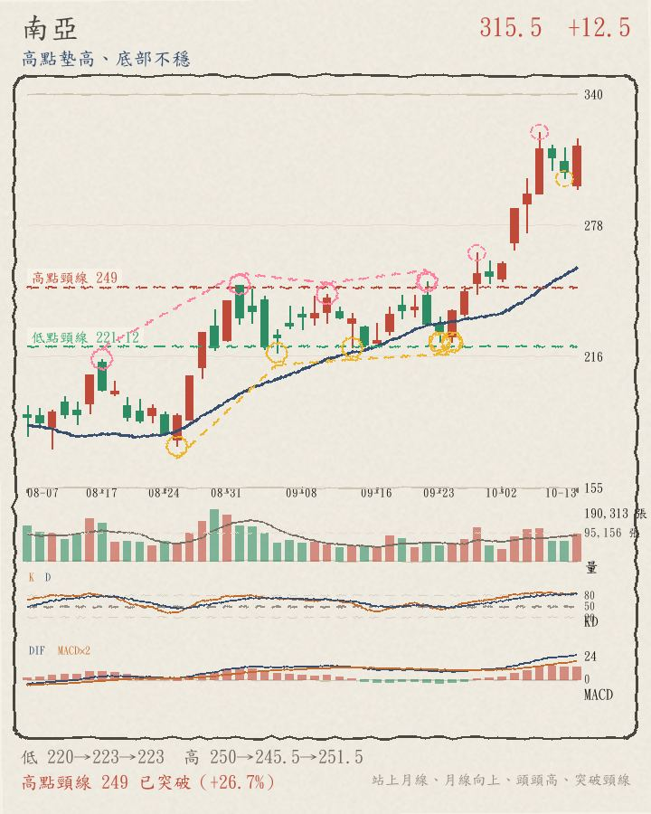
12:30 盤中 315.5（+4.13%），比加權指數強 5.83 個百分點、站上月線 254.55，已突破高點頸線 249，高點還在墊高（但底部沒同步墊高）。
- 月線位置：現價 315.5 在月線 254.55 之上（+23.9%）；5 日線 301.2 也在月線之上（短均在上）；月線向上
- 量能：以已過交易時間推估，今天成交量約是 20 日均量的 1.75 倍（爆量），比 20 日均量大不少；上漲又量增，量價配合
- 關鍵價位：高點頸線 249 已站上；前一交易日高點 314.5（高於 0.3%）；今天盤中高點 319（低於 1.1%）；今天盤中低點 295（高於 6.9%）
- 轉折結構：高點 250、245.5、251.5 墊高（頭頭高），但低點 220.5、223、223 沒有同步墊高；還沒確認的轉折低點 09-24 223、10-12 300；還沒確認的轉折高點 09-30 265、10-07 322（圖上虛線小圈）
國巨* 2327 上市
600 -36.0（-5.66%）
高點墊高、底部不穩 盤中成交值 295.1 億・全榜第 5 名（上市第 5 名）・相對大盤 -3.96
好條件 3/8：站上月線、月線向上、頭頭高
不好條件 4/8：今日下跌、相對大盤弱、量增下跌（出貨）、跌破昨日低點
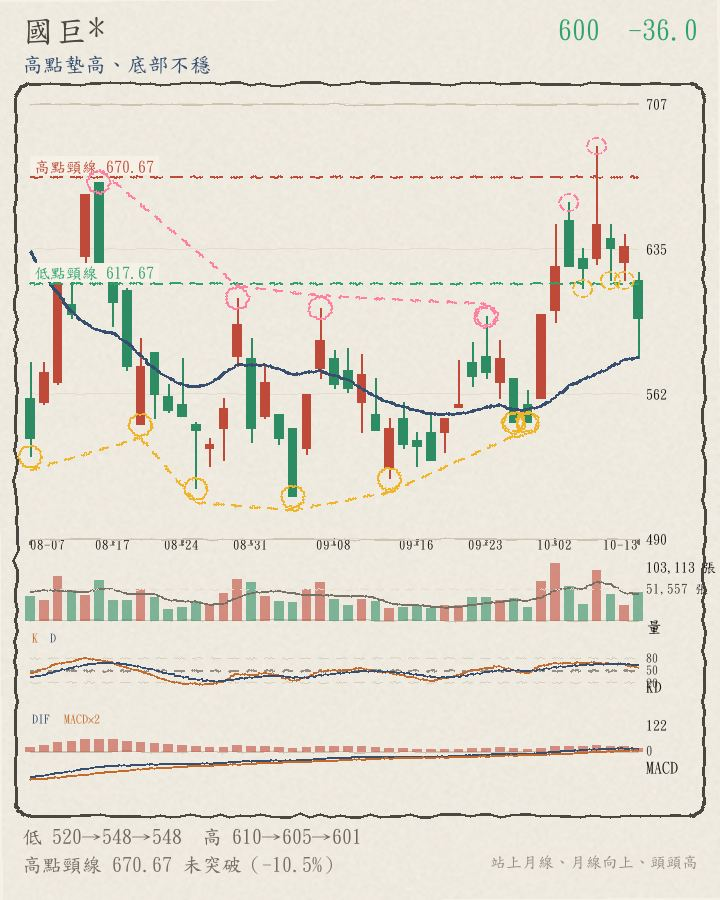
12:30 盤中 600（-5.66%），比加權指數弱 3.96 個百分點、站上月線 579.35，離高點頸線 670.67 還差 10.5%，高點還在墊高（但底部沒同步墊高）。
- 月線位置：現價 600 在月線 579.35 之上（+3.6%）；5 日線 633.8 也在月線之上（短均在上）；月線向上
- 量能：以已過交易時間推估，今天成交量約是 20 日均量的 1.54 倍（爆量），比 20 日均量大不少；下跌卻量增，量價背離
- 關鍵價位：高點頸線 670.67 還沒突破，差 10.5%；前一交易日高點 642（低於 6.5%）；今天盤中高點 623（低於 3.7%）；今天盤中低點 580（高於 3.4%）
- 轉折結構：高點 610、605、601 墊高（頭頭高），但低點 520、548、548 沒有同步墊高；還沒確認的轉折低點 10-08 619、10-12 619；還沒確認的轉折高點 10-05 658、10-07 686（圖上虛線小圈）
聯發科 2454 上市
4520 -105.0（-2.27%）
底部墊高、未過前高 盤中成交值 228.94 億・全榜第 6 名（上市第 6 名）・相對大盤 -0.57
好條件 2/8：月線向上、底底高
不好條件 5/8：跌破前低、今日下跌、相對大盤弱、在月線之下、跌破昨日低點
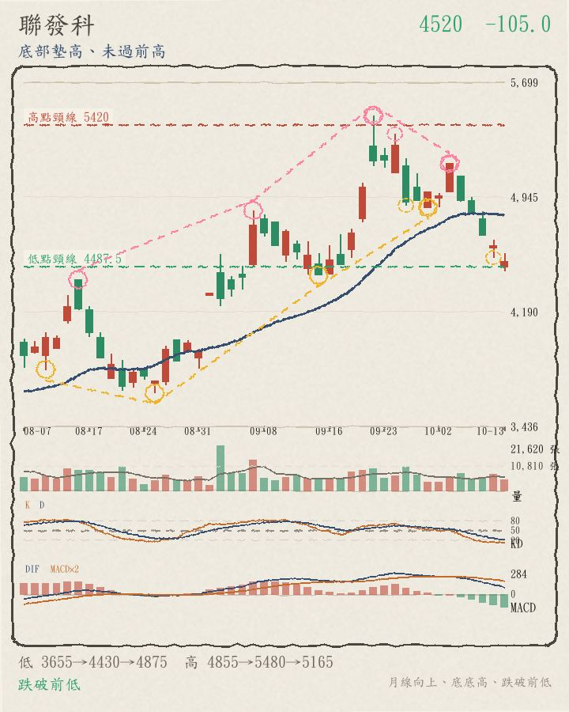
12:30 盤中 4520（-2.27%），比加權指數弱 0.57 個百分點、跌破月線 4834.5，離高點頸線 5420 還差 16.6%，底部還在墊高（但高點沒同步創高）。
- 月線位置：現價 4520 在月線 4834.5 之下（-6.5%）；5 日線 4847 也在月線之上（短均在上）；月線向上
- 量能：以已過交易時間推估，今天成交量約是 20 日均量的 0.95 倍（量平），跟 20 日均量差不多
- 關鍵價位：已跌破前一個轉折低點；高點頸線 5420 還在現價上方 16.6%；前一交易日高點 4660（低於 3.0%）；今天盤中高點 4575（低於 1.2%）；今天盤中低點 4460（高於 1.3%）
- 轉折結構：低點 3655、4430、4875 墊高（底底高），但高點 4855、5480、5165 沒有同步創高；還沒確認的轉折低點 10-01 4875、10-12 4545；還沒確認的轉折高點 09-24 5360、10-05 5165（圖上虛線小圈）
台光電 2383 上市
5535 -615.0（-10.00%）
高點墊高、底部不穩 盤中成交值 201.25 億・全榜第 7 名（上市第 7 名）・相對大盤 -8.30
好條件 3/8：站上月線、月線向上、頭頭高
不好條件 4/8：今日下跌、相對大盤弱、量增下跌（出貨）、跌破昨日低點
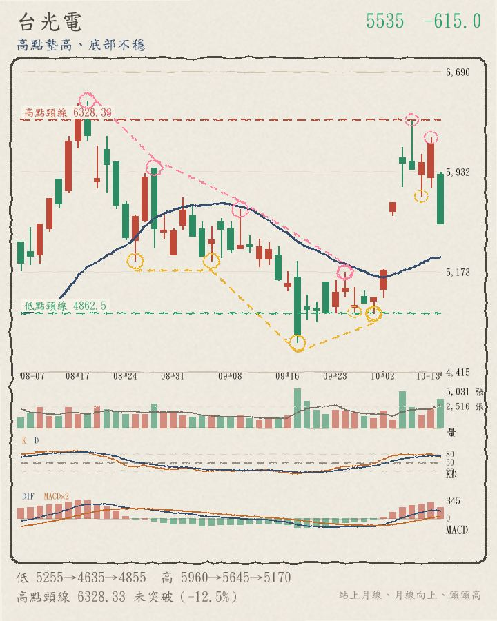
12:30 盤中 5535（-10.00%），比加權指數弱 8.30 個百分點、站上月線 5275.25，離高點頸線 6328.33 還差 12.5%，高點還在墊高（但底部沒同步墊高）。
- 月線位置：現價 5535 在月線 5275.25 之上（+4.9%）；5 日線 5959 也在月線之上（短均在上）；月線向上
- 量能：以已過交易時間推估，今天成交量約是 20 日均量的 2.26 倍（爆量），比 20 日均量大不少；下跌卻量增，量價背離
- 關鍵價位：高點頸線 6328.33 還沒突破，差 12.5%；前一交易日高點 6190（低於 10.6%）；今天盤中高點 5930（低於 6.7%）；今天盤中低點 5535（高於 0.0%）
- 轉折結構：高點 5960、5645、5170 墊高（頭頭高），但低點 5255、4635、4855 沒有同步墊高；還沒確認的轉折低點 10-01 4855、10-08 5745；還沒確認的轉折高點 10-07 6325、10-12 6190（圖上虛線小圈）
世芯-KY 3661 上市
3970 -425.0（-9.67%）
高點墊高、底部不穩 盤中成交值 174.88 億・全榜第 8 名（上市第 8 名）・相對大盤 -7.97
好條件 3/8：站上月線、月線向上、頭頭高
不好條件 5/8：今日下跌、相對大盤弱、量增下跌（出貨）、貼近今日低點（1% 內）、跌破昨日低點
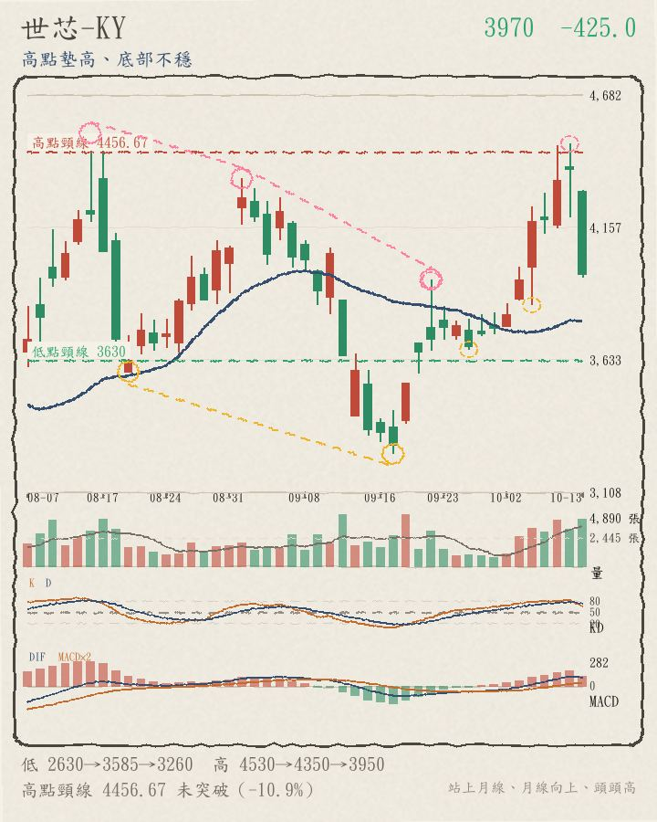
12:30 盤中 3970（-9.67%），比加權指數弱 7.97 個百分點、站上月線 3790，離高點頸線 4456.67 還差 10.9%，高點還在墊高（但底部沒同步墊高）。
- 月線位置：現價 3970 在月線 3790 之上（+4.8%）；5 日線 4212 也在月線之上（短均在上）；月線向上
- 量能：以已過交易時間推估，今天成交量約是 20 日均量的 2.29 倍（爆量），比 20 日均量大不少；下跌卻量增，量價背離
- 關鍵價位：高點頸線 4456.67 還沒突破，差 10.9%；前一交易日高點 4490（低於 11.6%）；今天盤中高點 4305（低於 7.8%）；今天盤中低點 3960（高於 0.3%）
- 轉折結構：高點 4530、4350、3950 墊高（頭頭高），但低點 2630、3585、3260 沒有同步墊高；還沒確認的轉折低點 09-29 3675、10-06 3850；還沒確認的轉折高點 09-22 3950、10-12 4490（圖上虛線小圈）
臻鼎-KY 4958 上市
548 -33.0（-5.68%）
上升趨勢（底底高＋頭頭高） 盤中成交值 162.07 億・全榜第 9 名（上市第 9 名）・相對大盤 -3.98
好條件 4/8：站上月線、月線向上、底底高、頭頭高
不好條件 4/8：今日下跌、相對大盤弱、量增下跌（出貨）、跌破昨日低點
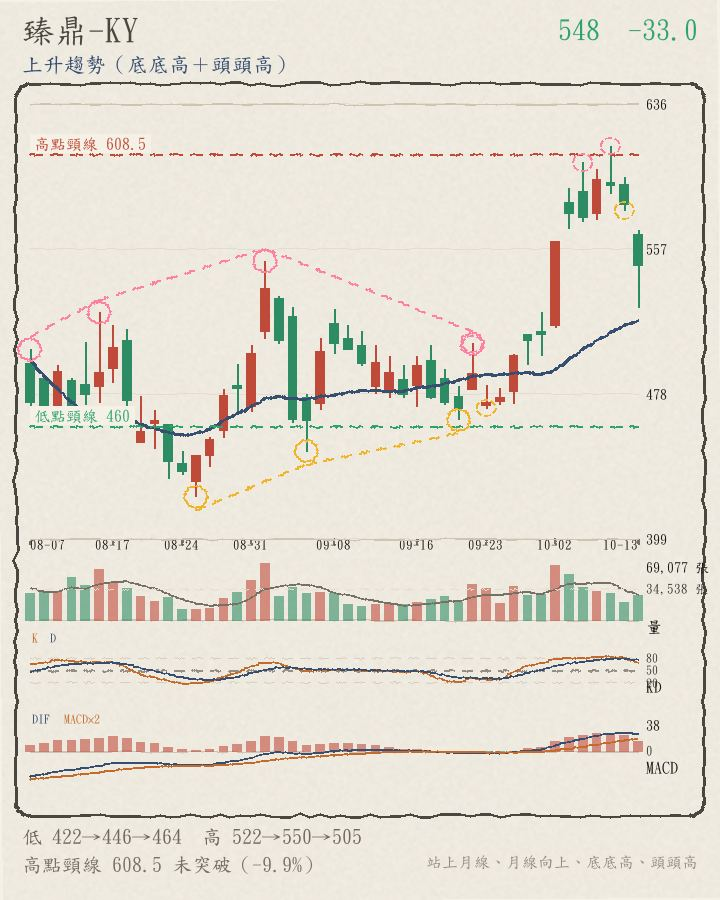
12:30 盤中 548（-5.68%），比加權指數弱 3.98 個百分點、站上月線 515.05，離高點頸線 608.5 還差 9.9%，轉折結構仍是底底高＋頭頭高。
- 月線位置：現價 548 在月線 515.05 之上（+6.4%）；5 日線 583.6 也在月線之上（短均在上）；月線向上
- 量能：以已過交易時間推估，今天成交量約是 20 日均量的 1.22 倍（量增），比 20 日均量大不少；下跌卻量增，量價背離
- 關鍵價位：高點頸線 608.5 還沒突破，差 9.9%；前一交易日高點 596（低於 8.1%）；今天盤中高點 567（低於 3.4%）；今天盤中低點 525（高於 4.4%）
- 轉折結構：低點 421.5、446.5、463.5 一路墊高、高點 522、550、505 也一路墊高，是底底高＋頭頭高；還沒確認的轉折低點 09-23 470、10-12 578；還沒確認的轉折高點 10-06 604、10-08 613（圖上虛線小圈）
華邦電 2344 上市
161 -13.0（-7.47%）
底部墊高、未過前高 盤中成交值 160.6 億・全榜第 10 名（上市第 10 名）・相對大盤 -5.77
好條件 1/8：底底高
不好條件 8/8：跌破前低、今日下跌、相對大盤弱、在月線之下、量增下跌（出貨）、貼近今日低點（1% 內）、跌破昨日低點、月線下彎
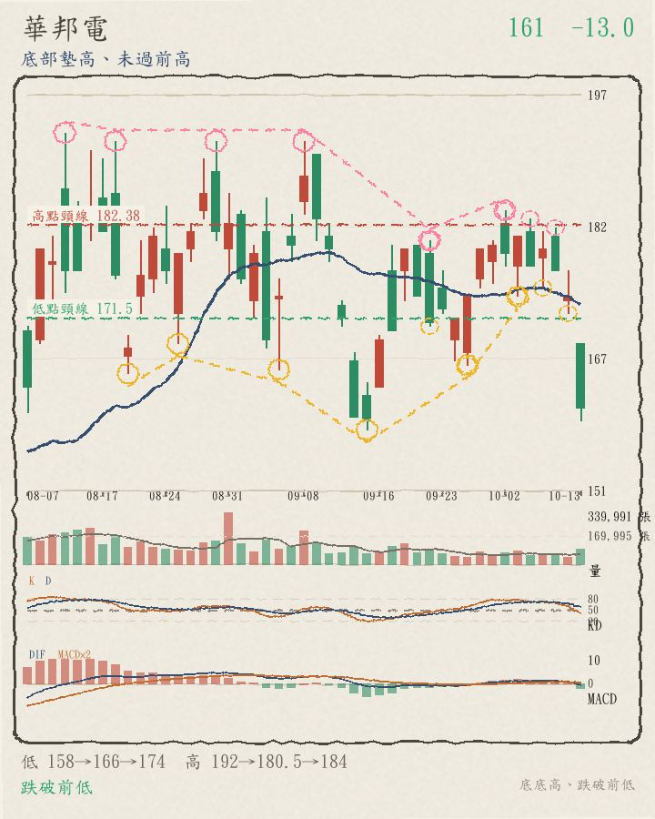
12:30 盤中 161（-7.47%），比加權指數弱 5.77 個百分點、跌破月線 173.975，離高點頸線 182.38 還差 11.7%，底部還在墊高（但高點沒同步創高）。
- 月線位置：現價 161 在月線 173.975 之下（-7.5%）；5 日線 177.8 也在月線之上（短均在上）；月線向下
- 量能：以已過交易時間推估，今天成交量約是 20 日均量的 1.56 倍（爆量），比 20 日均量大不少；下跌卻量增，量價背離
- 關鍵價位：已跌破前一個轉折低點；高點頸線 182.38 還在現價上方 11.7%；前一交易日高點 177（低於 9.0%）；今天盤中高點 168.5（低於 4.5%）；今天盤中低點 159.5（高於 0.9%）
- 轉折結構：低點 158.5、166、174 墊高（底底高），但高點 192、180.5、184 沒有同步創高；還沒確認的轉折低點 10-07 175、10-12 172；還沒確認的轉折高點 10-06 183、10-08 182（圖上虛線小圈）
台達電 2308 上市
1780 -120.0（-6.32%）
高點墊高、底部不穩 盤中成交值 160.09 億・全榜第 11 名（上市第 11 名）・相對大盤 -4.62
好條件 2/8：月線向上、頭頭高
不好條件 5/8：跌破前低、今日下跌、相對大盤弱、在月線之下、跌破昨日低點
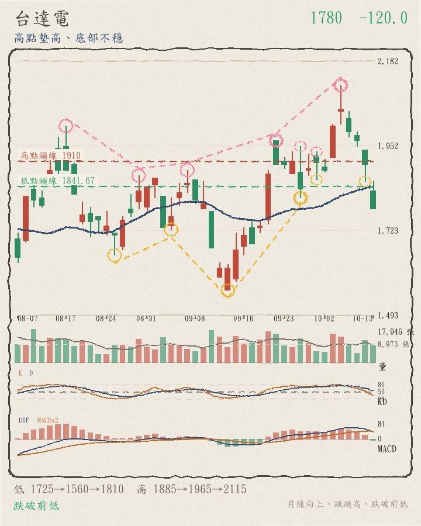
12:30 盤中 1780（-6.32%），比加權指數弱 4.62 個百分點、跌破月線 1836.25，離高點頸線 1910 還差 6.8%，高點還在墊高（但底部沒同步墊高）。
- 月線位置：現價 1780 在月線 1836.25 之下（-3.1%）；5 日線 1982 也在月線之上（短均在上）；月線向上
- 量能：以已過交易時間推估，今天成交量約是 20 日均量的 1.05 倍（量平），比 20 日均量大一些
- 關鍵價位：已跌破前一個轉折低點；高點頸線 1910 還在現價上方 6.8%；前一交易日高點 1940（低於 8.2%）；今天盤中高點 1855（低於 4.0%）；今天盤中低點 1780（高於 0.0%）
- 轉折結構：高點 1885、1965、2115 墊高（頭頭高），但低點 1725、1560、1810 沒有同步墊高；還沒確認的轉折低點 10-01 1860、10-12 1855；還沒確認的轉折高點 10-01 1935、10-06 2115（圖上虛線小圈）
聯電 2303 上市
141 -4.5（-3.09%）
底部墊高、未過前高 盤中成交值 145.82 億・全榜第 12 名（上市第 12 名）・相對大盤 -1.39
好條件 2/8：月線向上、底底高
不好條件 5/8：跌破前低、今日下跌、相對大盤弱、在月線之下、跌破昨日低點
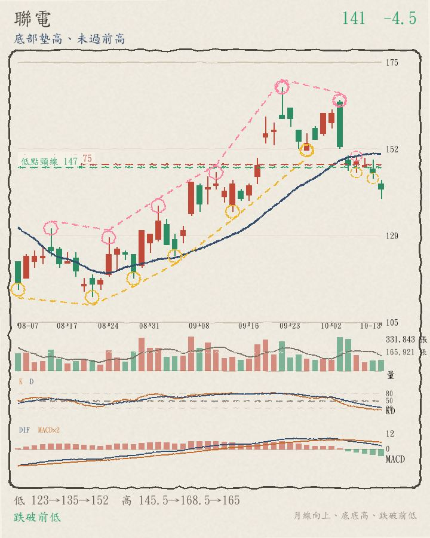
12:30 盤中 141（-3.09%），比加權指數弱 1.39 個百分點、跌破月線 150.65，離高點頸線 147.75 還差 4.6%，底部還在墊高（但高點沒同步創高）。
- 月線位置：現價 141 在月線 150.65 之下（-6.4%）；5 日線 148.3 也在月線之下（短均在下）；月線向上
- 量能：以已過交易時間推估，今天成交量約是 20 日均量的 0.76 倍（量平），比 20 日均量少很多
- 關鍵價位：已跌破前一個轉折低點；高點頸線 147.75 還在現價上方 4.6%；前一交易日高點 149（低於 5.4%）；今天盤中高點 143.5（低於 1.7%）；今天盤中低點 138.5（高於 1.8%）
- 轉折結構：低點 123、135、151.5 墊高（底底高），但高點 145.5、168.5、165 沒有同步創高；還沒確認的轉折低點 10-07 145.5、10-12 144；還沒確認的轉折高點 10-05 165、10-07 150（圖上虛線小圈）
玉晶光 3406 上市
1175 +105.0（+9.81%）
高點墊高、底部不穩 盤中成交值 143.95 億・全榜第 13 名（上市第 13 名）・相對大盤 +11.51
好條件 6/8：站上月線、月線向上、頭頭高、突破頸線、相對大盤強、攻擊量（量增＋上漲）
不好條件 0/8：無
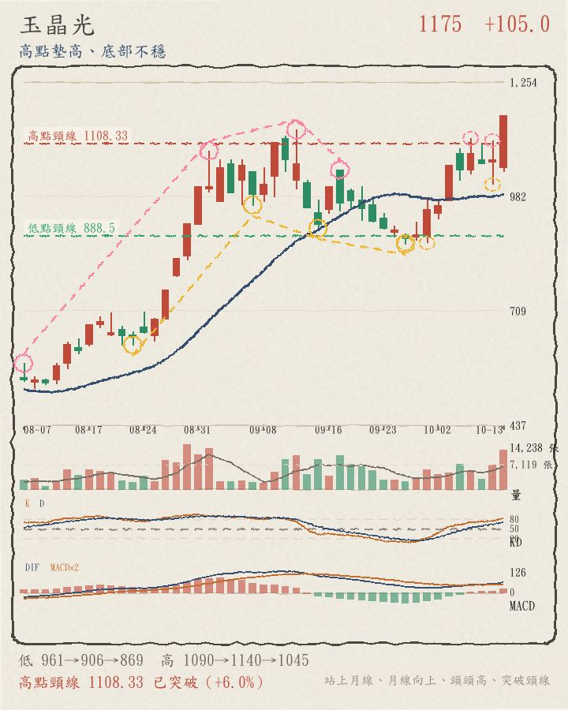
12:30 盤中 1175（+9.81%），比加權指數強 11.51 個百分點、站上月線 981，已突破高點頸線 1108.33，高點還在墊高（但底部沒同步墊高）。
- 月線位置：現價 1175 在月線 981 之上（+19.8%）；5 日線 1063 也在月線之上（短均在上）；月線向上
- 量能：以已過交易時間推估，今天成交量約是 20 日均量的 2.63 倍（爆量），比 20 日均量大不少；上漲又量增，量價配合
- 關鍵價位：高點頸線 1108.33 已站上；前一交易日高點 1115（高於 5.4%）；今天盤中高點 1175（高於 0.0%）；今天盤中低點 1040（高於 13.0%）
- 轉折結構：高點 1090、1140、1045 墊高（頭頭高），但低點 961、906、869 沒有同步墊高；還沒確認的轉折低點 10-01 871、10-12 1010；還沒確認的轉折高點 10-07 1120、10-12 1115（圖上虛線小圈）
金像電 2368 上市
1185 -50.0（-4.05%）
高點墊高、底部不穩 盤中成交值 134.62 億・全榜第 14 名（上市第 14 名）・相對大盤 -2.35
好條件 4/8：站上月線、月線向上、頭頭高、突破頸線
不好條件 4/8：今日下跌、相對大盤弱、量增下跌（出貨）、跌破昨日低點
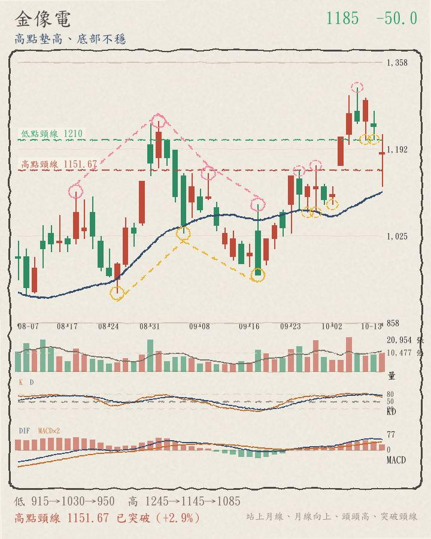
12:30 盤中 1185（-4.05%），比加權指數弱 2.35 個百分點、站上月線 1101.95，已突破高點頸線 1151.67，高點還在墊高（但底部沒同步墊高）。
- 月線位置：現價 1185 在月線 1101.95 之上（+7.5%）；5 日線 1248 也在月線之上（短均在上）；月線向上
- 量能：以已過交易時間推估，今天成交量約是 20 日均量的 1.54 倍（爆量），比 20 日均量大不少；下跌卻量增，量價背離
- 關鍵價位：高點頸線 1151.67 已站上；前一交易日高點 1265（低於 6.3%）；今天盤中高點 1220（低於 2.9%）；今天盤中低點 1120（高於 5.8%）
- 轉折結構：高點 1245、1145、1085 墊高（頭頭高），但低點 915、1030、950 沒有同步墊高；還沒確認的轉折低點 10-08 1210、10-12 1210；還沒確認的轉折高點 09-30 1160、10-07 1310（圖上虛線小圈）
台燿 6274 上櫃
1675 -60.0（-3.46%）
高點墊高、底部不穩 盤中成交值 131.92 億・全榜第 15 名（上櫃第 1 名）・相對大盤 -1.76
好條件 3/8：站上月線、月線向上、頭頭高
不好條件 3/8：今日下跌、相對大盤弱、跌破昨日低點

12:30 盤中 1675（-3.46%），比加權指數弱 1.76 個百分點、站上月線 1518.25，離高點頸線 1807.5 還差 7.3%，高點還在墊高（但底部沒同步墊高）。
- 月線位置：現價 1675 在月線 1518.25 之上（+10.3%）；5 日線 1746 也在月線之上（短均在上）；月線向上
- 量能：以已過交易時間推估，今天成交量約是 20 日均量的 1.10 倍（量增），比 20 日均量大一些；下跌卻量增，量價背離
- 關鍵價位：高點頸線 1807.5 還沒突破，差 7.3%；前一交易日高點 1740（低於 3.7%）；今天盤中高點 1715（低於 2.3%）；今天盤中低點 1595（高於 5.0%）
- 轉折結構：高點 1565、1430、1460 墊高（頭頭高），但低點 1395、1295、1275 沒有同步墊高；還沒確認的轉折低點 10-06 1680、10-08 1645；還沒確認的轉折高點 10-05 1780、10-07 1835（圖上虛線小圈）
欣興 3037 上市
1180 -75.0（-5.98%）
高點墊高、底部不穩 盤中成交值 131.4 億・全榜第 16 名（上市第 15 名）・相對大盤 -4.28
好條件 4/8：站上月線、月線向上、頭頭高、突破頸線
不好條件 3/8：今日下跌、相對大盤弱、跌破昨日低點
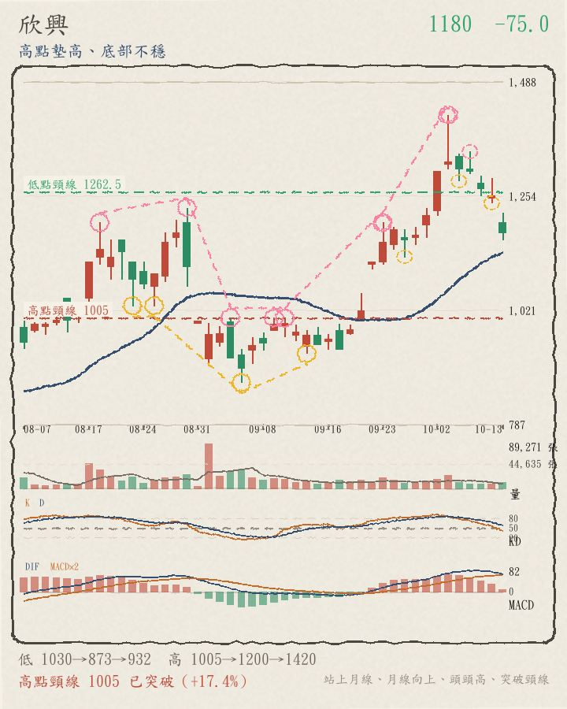
12:30 盤中 1180（-5.98%），比加權指數弱 4.28 個百分點、站上月線 1129.2，已突破高點頸線 1005，高點還在墊高（但底部沒同步墊高）。
- 月線位置：現價 1180 在月線 1129.2 之上（+4.5%）；5 日線 1293 也在月線之上（短均在上）；月線向上
- 量能：以已過交易時間推估，今天成交量約是 20 日均量的 1.00 倍（量平），跟 20 日均量差不多
- 關鍵價位：高點頸線 1005 已站上；前一交易日高點 1290（低於 8.5%）；今天盤中高點 1220（低於 3.3%）；今天盤中低點 1165（高於 1.3%）
- 轉折結構：高點 1005、1200、1420 墊高（頭頭高），但低點 1030、873、932 沒有同步墊高；還沒確認的轉折低點 10-06 1285、10-12 1240；還沒確認的轉折高點 10-05 1420、10-07 1345（圖上虛線小圈）
長榮 2603 上市
262 +6.5（+2.54%）
上升趨勢（底底高＋頭頭高） 盤中成交值 128.75 億・全榜第 17 名（上市第 16 名）・相對大盤 +4.24
好條件 8/8：站上月線、月線向上、底底高、頭頭高、突破頸線、相對大盤強、攻擊量（量增＋上漲）、守住今日高檔（距今日高點 1% 內）
不好條件 0/8：無
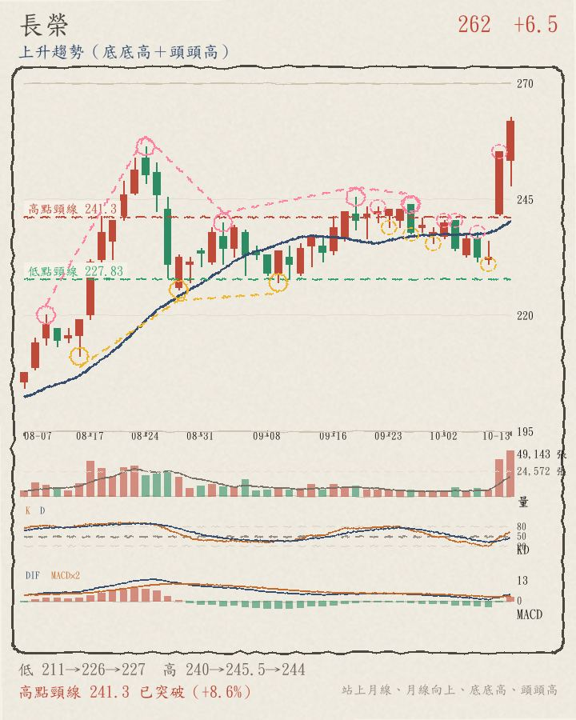
12:30 盤中 262（+2.54%），比加權指數強 4.24 個百分點、站上月線 238.775，已突破高點頸線 241.3，轉折結構仍是底底高＋頭頭高。
- 月線位置：現價 262 在月線 238.775 之上（+9.7%）；5 日線 238.3 也在月線之下（短均在下）；月線向上
- 量能：以已過交易時間推估，今天成交量約是 20 日均量的 8.56 倍（爆量），比 20 日均量大不少；上漲又量增，量價配合
- 關鍵價位：高點頸線 241.3 已站上；前一交易日高點 255.5（高於 2.5%）；今天盤中高點 263（低於 0.4%）；今天盤中低點 248（高於 5.6%）
- 轉折結構：低點 211、225.5、227 一路墊高、高點 240、245.5、244 也一路墊高，是底底高＋頭頭高；還沒確認的轉折低點 10-01 235.5、10-08 231；還沒確認的轉折高點 10-07 238、10-12 255.5（圖上虛線小圈）
環球晶 6488 上櫃
1015 -100.0（-8.97%）
區間或轉弱 盤中成交值 125.41 億・全榜第 18 名（上櫃第 2 名）・相對大盤 -7.27
好條件 1/8：月線向上
不好條件 6/8：今日下跌、相對大盤弱、在月線之下、量增下跌（出貨）、貼近今日低點（1% 內）、跌破昨日低點
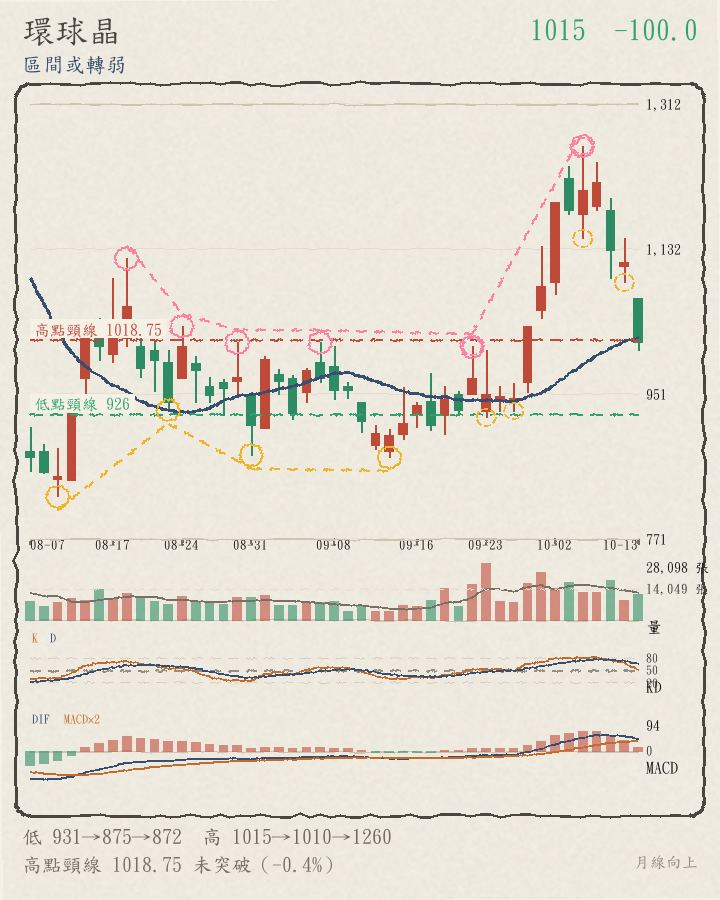
12:30 盤中 1015（-8.97%），比加權指數弱 7.27 個百分點、跌破月線 1016.3，離高點頸線 1018.75 還差 0.4%，轉折還沒走出明顯方向。
- 月線位置：現價 1015 在月線 1016.3 之下（-0.1%）；5 日線 1169 也在月線之上（短均在上）；月線向上
- 量能：以已過交易時間推估，今天成交量約是 20 日均量的 1.26 倍（量增），比 20 日均量大不少；下跌卻量增，量價背離
- 關鍵價位：高點頸線 1018.75 還沒突破，差 0.4%；前一交易日高點 1145（低於 11.4%）；今天盤中高點 1070（低於 5.1%）；今天盤中低點 1005（高於 1.0%）
- 轉折結構：低點 931、875、872 與高點 1015、1010、1260 都沒有明顯遞增，屬於區間震盪或轉弱；還沒確認的轉折低點 10-06 1145、10-12 1090；還沒確認的轉折高點 09-22 1010、10-06 1260（圖上虛線小圈）
穩懋 3105 上櫃
552 -28.0（-4.83%）
區間或轉弱 盤中成交值 120.69 億・全榜第 19 名（上櫃第 3 名）・相對大盤 -3.13
好條件 3/8：站上月線、月線向上、突破頸線
不好條件 3/8：今日下跌、相對大盤弱、跌破昨日低點
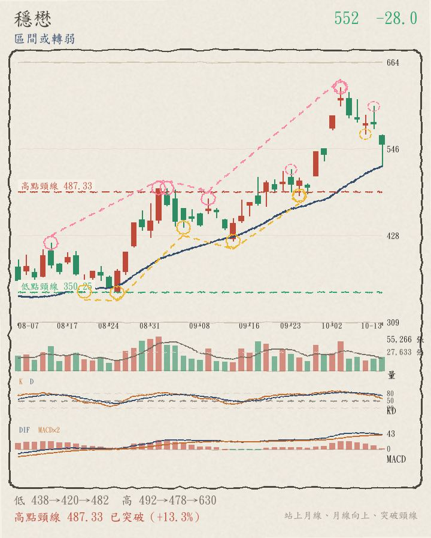
12:30 盤中 552（-4.83%），比加權指數弱 3.13 個百分點、站上月線 517.55，已突破高點頸線 487.33，轉折還沒走出明顯方向。
- 月線位置：現價 552 在月線 517.55 之上（+6.7%）；5 日線 591.2 也在月線之上（短均在上）；月線向上
- 量能：以已過交易時間推估，今天成交量約是 20 日均量的 1.01 倍（量平），跟 20 日均量差不多
- 關鍵價位：高點頸線 487.33 已站上；前一交易日高點 604（低於 8.6%）；今天盤中高點 565（低於 2.3%）；今天盤中低點 522（高於 5.7%）
- 轉折結構：低點 438.5、420、482 與高點 492、478、630 都沒有明顯遞增，屬於區間震盪或轉弱；還沒確認的轉折低點 09-24 482、10-08 566；還沒確認的轉折高點 10-05 630、10-12 604（圖上虛線小圈）
友達 2409 上市
34.15 -1.4（-3.94%）
高點墊高、底部不穩 盤中成交值 107.6 億・全榜第 20 名（上市第 17 名）・相對大盤 -2.24
好條件 2/8：月線向上、頭頭高
不好條件 4/8：今日下跌、相對大盤弱、在月線之下、跌破昨日低點
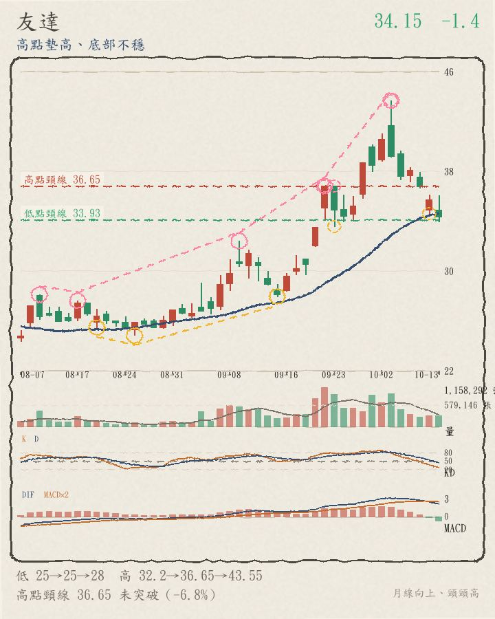
12:30 盤中 34.15（-3.94%），比加權指數弱 2.24 個百分點、跌破月線 34.28，離高點頸線 36.65 還差 6.8%，高點還在墊高（但底部沒同步墊高）。
- 月線位置：現價 34.15 在月線 34.28 之下（-0.4%）；5 日線 37.32 也在月線之上（短均在上）；月線向上
- 量能：以已過交易時間推估，今天成交量約是 20 日均量的 0.72 倍（量平），比 20 日均量少很多
- 關鍵價位：高點頸線 36.65 還沒突破，差 6.8%；前一交易日高點 35.95（低於 5.0%）；今天盤中高點 35.85（低於 4.7%）；今天盤中低點 33.75（高於 1.2%）
- 轉折結構：高點 32.2、36.65、43.55 墊高（頭頭高），但低點 25.25、24.6、27.75 沒有同步墊高；還沒確認的轉折低點 09-23 33.4、10-12 34.45；還沒確認的轉折高點 09-23 36.65、10-05 43.55（圖上虛線小圈）
聯亞 3081 上櫃
2730 -295.0（-9.75%）
高點墊高、底部不穩 盤中成交值 103.9 億・全榜第 21 名（上櫃第 4 名）・相對大盤 -8.05
好條件 1/8：頭頭高
不好條件 7/8：今日下跌、相對大盤弱、在月線之下、量增下跌（出貨）、貼近今日低點（1% 內）、跌破昨日低點、月線下彎
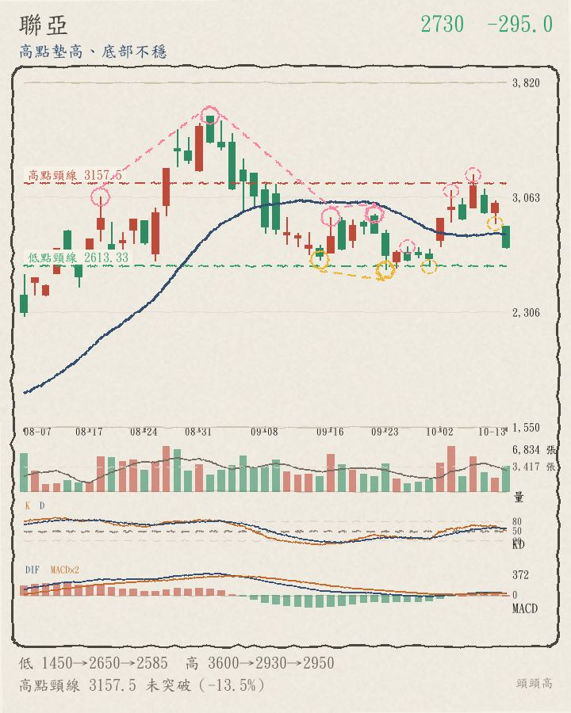
12:30 盤中 2730（-9.75%），比加權指數弱 8.05 個百分點、跌破月線 2826，離高點頸線 3157.5 還差 13.5%，高點還在墊高（但底部沒同步墊高）。
- 月線位置：現價 2730 在月線 2826 之下（-3.4%）；5 日線 3009 也在月線之上（短均在上）；月線向下
- 量能：以已過交易時間推估，今天成交量約是 20 日均量的 1.52 倍（爆量），比 20 日均量大不少；下跌卻量增，量價背離
- 關鍵價位：高點頸線 3157.5 還沒突破，差 13.5%；前一交易日高點 3040（低於 10.2%）；今天盤中高點 2875（低於 5.0%）；今天盤中低點 2725（高於 0.2%）
- 轉折結構：高點 3600、2930、2950 墊高（頭頭高），但低點 1450、2650、2585 沒有同步墊高；還沒確認的轉折低點 10-01 2605、10-12 2890；還沒確認的轉折高點 10-05 3105、10-07 3210（圖上虛線小圈）
高力 8996 上市
1735 +15.0（+0.87%）
上升趨勢（底底高＋頭頭高） 盤中成交值 103.04 億・全榜第 22 名（上市第 18 名）・相對大盤 +2.57
好條件 7/8：站上月線、月線向上、底底高、頭頭高、突破頸線、相對大盤強、攻擊量（量增＋上漲）
不好條件 0/8：無
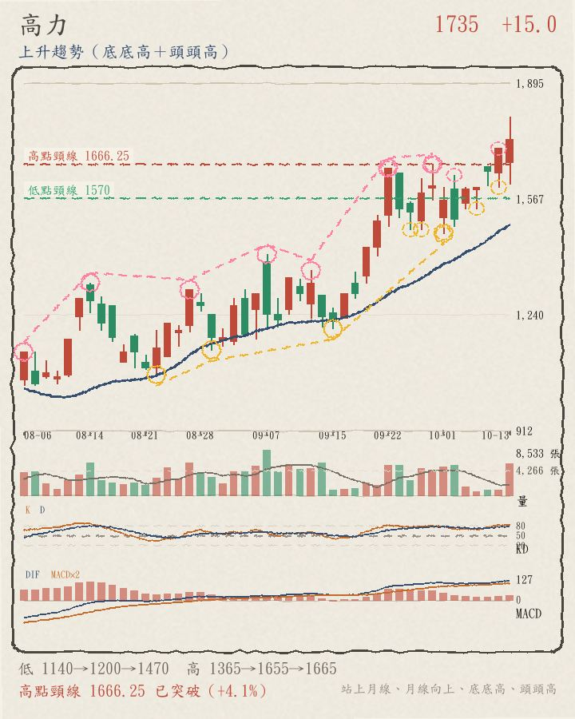
12:30 盤中 1735（+0.87%），比加權指數強 2.57 個百分點、站上月線 1475.25，已突破高點頸線 1666.25，轉折結構仍是底底高＋頭頭高。
- 月線位置：現價 1735 在月線 1475.25 之上（+17.6%）；5 日線 1612 也在月線之上（短均在上）；月線向上
- 量能：以已過交易時間推估，今天成交量約是 20 日均量的 2.13 倍（爆量），比 20 日均量大不少；上漲又量增，量價配合
- 關鍵價位：高點頸線 1666.25 已站上；前一交易日高點 1710（高於 1.5%）；今天盤中高點 1800（低於 3.6%）；今天盤中低點 1610（高於 7.8%）
- 轉折結構：低點 1140、1200、1470 一路墊高、高點 1365、1655、1665 也一路墊高，是底底高＋頭頭高；還沒確認的轉折低點 10-06 1540、10-08 1600；還沒確認的轉折高點 10-02 1635、10-08 1710（圖上虛線小圈）
京元電子 2449 上市
305 +5.0（+1.67%）
高點墊高、底部不穩 盤中成交值 98.42 億・全榜第 23 名（上市第 19 名）・相對大盤 +3.37
好條件 6/8：站上月線、月線向上、頭頭高、相對大盤強、攻擊量（量增＋上漲）、守住今日高檔（距今日高點 1% 內）
不好條件 0/8：無
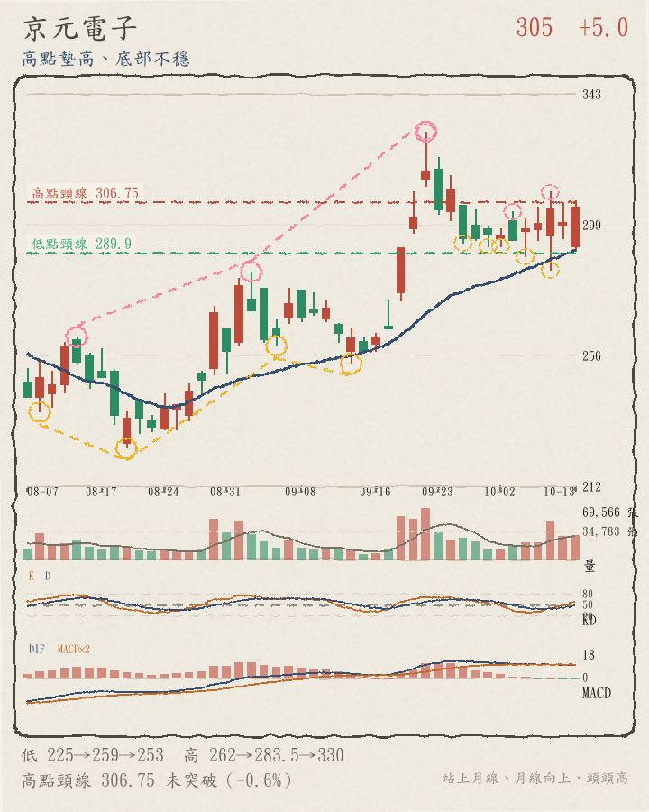
12:30 盤中 305（+1.67%），比加權指數強 3.37 個百分點、站上月線 289.05，離高點頸線 306.75 還差 0.6%，高點還在墊高（但底部沒同步墊高）。
- 月線位置：現價 305 在月線 289.05 之上（+5.5%）；5 日線 299.2 也在月線之上（短均在上）；月線向上
- 量能：以已過交易時間推估，今天成交量約是 20 日均量的 1.59 倍（爆量），比 20 日均量大不少；上漲又量增，量價配合
- 關鍵價位：高點頸線 306.75 還沒突破，差 0.6%；前一交易日高點 306.5（低於 0.5%）；今天盤中高點 307（低於 0.7%）；今天盤中低點 290.5（高於 5.0%）
- 轉折結構：高點 262、283.5、330 墊高（頭頭高），但低點 225、259、253 沒有同步墊高；還沒確認的轉折低點 10-06 288.5、10-08 284；還沒確認的轉折高點 10-05 303.5、10-08 310（圖上虛線小圈）
力積電 6770 上市
67.6 -3.8（-5.32%）
區間或轉弱 盤中成交值 94.59 億・全榜第 24 名（上市第 20 名）・相對大盤 -3.62
好條件 1/8：月線向上
不好條件 6/8：跌破前低、今日下跌、相對大盤弱、在月線之下、量增下跌（出貨）、跌破昨日低點
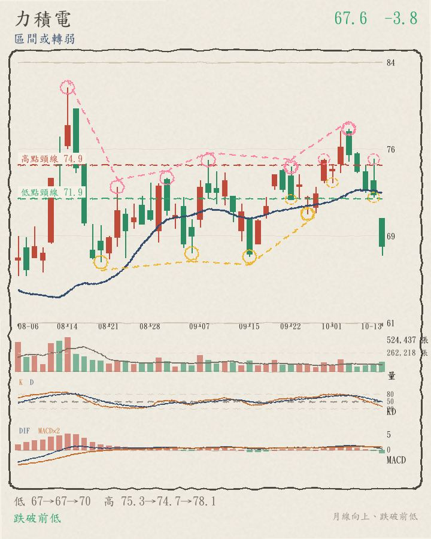
12:30 盤中 67.6（-5.32%），比加權指數弱 3.62 個百分點、跌破月線 72.62，離高點頸線 74.9 還差 9.7%，轉折還沒走出明顯方向。
- 月線位置：現價 67.6 在月線 72.62 之下（-6.9%）；5 日線 74.28 也在月線之上（短均在上）；月線向上
- 量能：以已過交易時間推估，今天成交量約是 20 日均量的 1.53 倍（爆量），比 20 日均量大不少；下跌卻量增，量價背離
- 關鍵價位：已跌破前一個轉折低點；高點頸線 74.9 還在現價上方 9.7%；前一交易日高點 75.4（低於 10.3%）；今天盤中高點 70.1（低於 3.6%）；今天盤中低點 66.8（高於 1.2%）
- 轉折結構：低點 67、66.7、70.5 與高點 75.3、74.7、78.1 都沒有明顯遞增，屬於區間震盪或轉弱；還沒確認的轉折低點 10-01 73.3、10-08 72；還沒確認的轉折高點 10-05 78.1、10-08 75.4（圖上虛線小圈）
台塑 1301 上市
81.5 +0.8（+0.99%）
高點墊高、底部不穩 盤中成交值 90.4 億・全榜第 25 名（上市第 21 名）・相對大盤 +2.69
好條件 6/8：站上月線、月線向上、頭頭高、突破頸線、相對大盤強、攻擊量（量增＋上漲）
不好條件 0/8：無
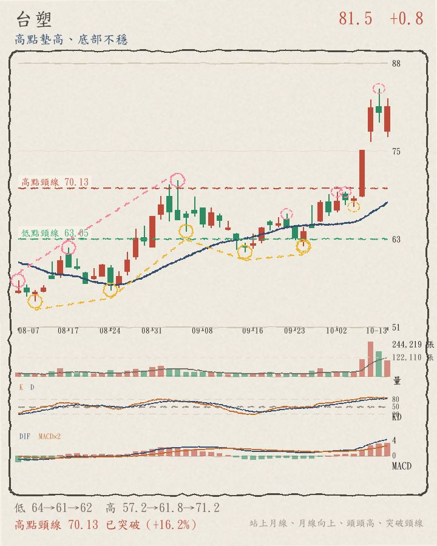
12:30 盤中 81.5（+0.99%），比加權指數強 2.69 個百分點、站上月線 67.32，已突破高點頸線 70.13，高點還在墊高（但底部沒同步墊高）。
- 月線位置：現價 81.5 在月線 67.32 之上（+21.1%）；5 日線 74.9 也在月線之上（短均在上）；月線向上
- 量能：以已過交易時間推估，今天成交量約是 20 日均量的 3.61 倍（爆量），比 20 日均量大不少；上漲又量增，量價配合
- 關鍵價位：高點頸線 70.13 已站上；前一交易日高點 84（低於 3.0%）；今天盤中高點 82.6（低於 1.3%）；今天盤中低點 77.3（高於 5.4%）
- 轉折結構：高點 57.2、61.8、71.2 墊高（頭頭高），但低點 64.1、61.2、62 沒有同步墊高；還沒確認的轉折低點 09-24 62、10-06 67.5；還沒確認的轉折高點 10-05 69.6、10-12 84（圖上虛線小圈）
台表科 6278 上市
257.5 -15.0（-5.50%）
上升趨勢（底底高＋頭頭高） 盤中成交值 86.82 億・全榜第 26 名（上市第 22 名）・相對大盤 -3.80
好條件 5/8：站上月線、月線向上、底底高、頭頭高、突破頸線
不好條件 4/8：今日下跌、相對大盤弱、量增下跌（出貨）、貼近今日低點（1% 內）
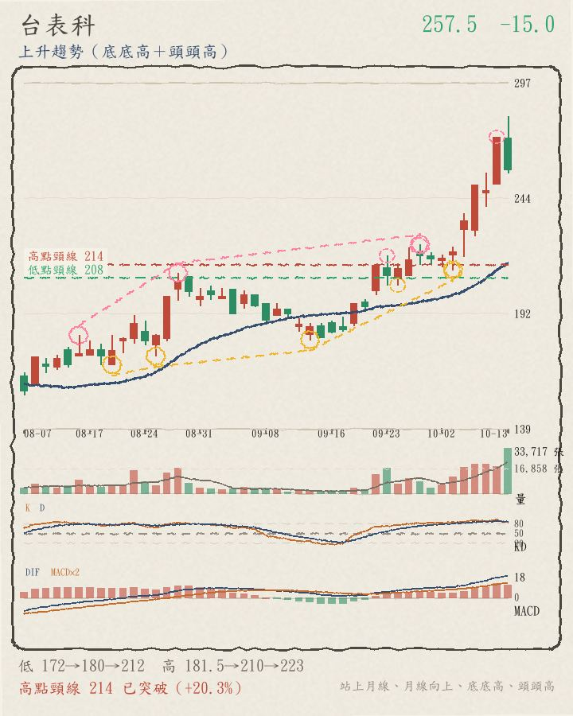
12:30 盤中 257.5（-5.50%），比加權指數弱 3.80 個百分點、站上月線 211.425，已突破高點頸線 214，轉折結構仍是底底高＋頭頭高。
- 月線位置：現價 257.5 在月線 211.425 之上（+21.8%）；5 日線 245 也在月線之上（短均在上）；月線向上
- 量能：以已過交易時間推估，今天成交量約是 20 日均量的 5.29 倍（爆量），比 20 日均量大不少；下跌卻量增，量價背離
- 關鍵價位：高點頸線 214 已站上；前一交易日高點 272.5（低於 5.5%）；今天盤中高點 282（低於 8.7%）；今天盤中低點 256（高於 0.6%）
- 轉折結構：低點 172、179.5、211.5 一路墊高、高點 181.5、210、223 也一路墊高，是底底高＋頭頭高；還沒確認的轉折低點 09-24 204.5、10-05 211.5；還沒確認的轉折高點 09-30 223、10-12 272.5（圖上虛線小圈）
智邦 2345 上市
2040 -90.0（-4.23%）
高點墊高、底部不穩 盤中成交值 82.5 億・全榜第 27 名（上市第 23 名）・相對大盤 -2.53
好條件 3/8：站上月線、月線向上、頭頭高
不好條件 3/8：今日下跌、相對大盤弱、量增下跌（出貨）
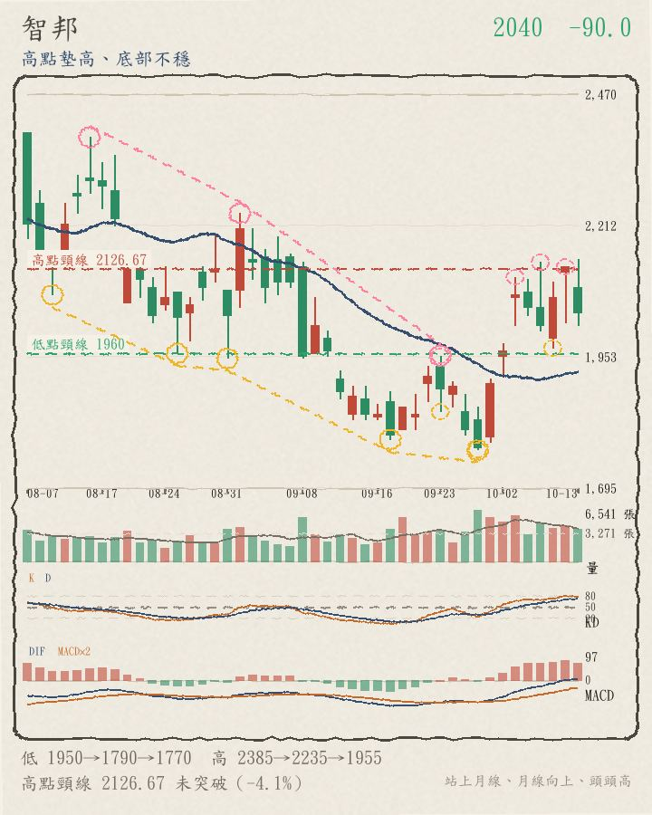
12:30 盤中 2040（-4.23%），比加權指數弱 2.53 個百分點、站上月線 1919.5，離高點頸線 2126.67 還差 4.1%，高點還在墊高（但底部沒同步墊高）。
- 月線位置：現價 2040 在月線 1919.5 之上（+6.3%）；5 日線 2068 也在月線之上（短均在上）；月線向上
- 量能：以已過交易時間推估，今天成交量約是 20 日均量的 1.32 倍（量增），比 20 日均量大不少；下跌卻量增，量價背離
- 關鍵價位：高點頸線 2126.67 還沒突破，差 4.1%；前一交易日高點 2130（低於 4.2%）；今天盤中高點 2145（低於 4.9%）；今天盤中低點 2015（高於 1.2%）
- 轉折結構：高點 2385、2235、1955 墊高（頭頭高），但低點 1950、1790、1770 沒有同步墊高；還沒確認的轉折低點 09-30 1770、10-08 1970；還沒確認的轉折高點 10-07 2140、10-12 2130（圖上虛線小圈）
南電 8046 上市
1430 -10.0（-0.69%）
上升趨勢（底底高＋頭頭高） 盤中成交值 80.67 億・全榜第 28 名（上市第 24 名）・相對大盤 +1.01
好條件 6/8：站上月線、月線向上、底底高、頭頭高、相對大盤強、守住今日高檔（距今日高點 1% 內）
不好條件 1/8：今日下跌
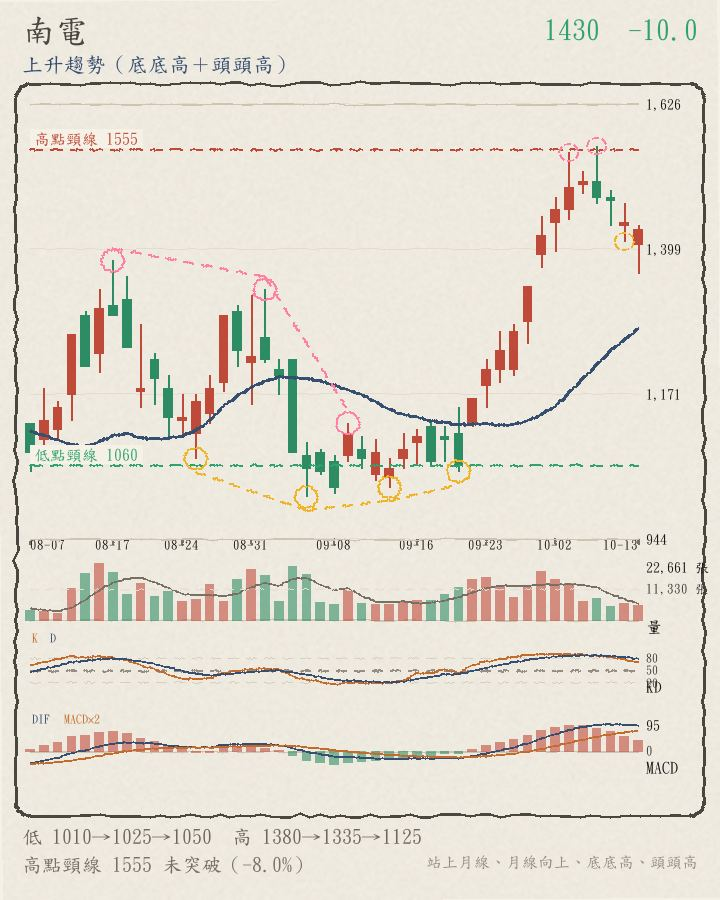
12:30 盤中 1430（-0.69%），比加權指數強 1.01 個百分點、站上月線 1256，離高點頸線 1555 還差 8.0%，轉折結構仍是底底高＋頭頭高。
- 月線位置：現價 1430 在月線 1256 之上（+13.8%）；5 日線 1479 也在月線之上（短均在上）；月線向上
- 量能：以已過交易時間推估，今天成交量約是 20 日均量的 0.67 倍（量縮），比 20 日均量少很多
- 關鍵價位：高點頸線 1555 還沒突破，差 8.0%；前一交易日高點 1470（低於 2.7%）；今天盤中高點 1435（低於 0.3%）；今天盤中低點 1360（高於 5.1%）
- 轉折結構：低點 1010、1025、1050 一路墊高、高點 1380、1335、1125 也一路墊高，是底底高＋頭頭高；還沒確認的轉折低點 10-12 1410；還沒確認的轉折高點 10-05 1550、10-07 1560（圖上虛線小圈）
台塑化 6505 上市
119 +10.5（+9.68%）
上升趨勢（底底高＋頭頭高） 盤中成交值 79.18 億・全榜第 29 名（上市第 25 名）・相對大盤 +11.38
好條件 7/8：站上月線、月線向上、底底高、頭頭高、突破頸線、相對大盤強、攻擊量（量增＋上漲）
不好條件 0/8：無
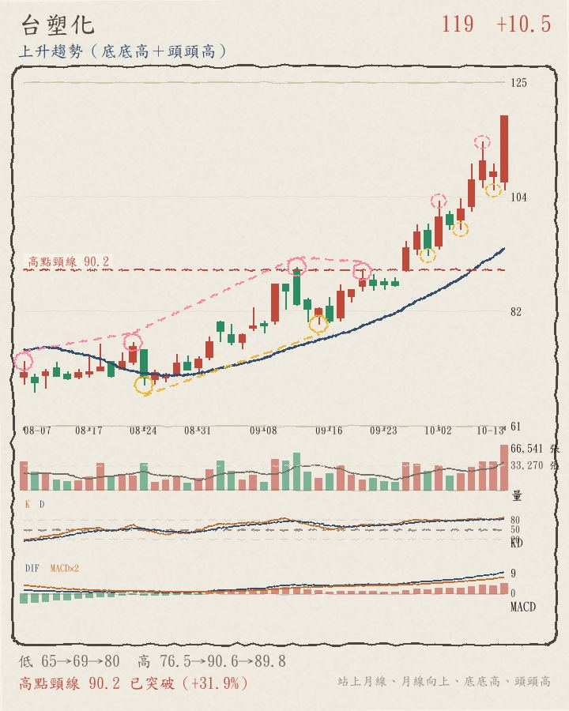
12:30 盤中 119（+9.68%），比加權指數強 11.38 個百分點、站上月線 92.54，已突破高點頸線 90.2，轉折結構仍是底底高＋頭頭高。
- 月線位置：現價 119 在月線 92.54 之上（+28.6%）；5 日線 105.22 也在月線之上（短均在上）；月線向上
- 量能：以已過交易時間推估，今天成交量約是 20 日均量的 2.93 倍（爆量），比 20 日均量大不少；上漲又量增，量價配合
- 關鍵價位：高點頸線 90.2 已站上；前一交易日高點 110（高於 8.2%）；今天盤中高點 119（高於 0.0%）；今天盤中低點 105（高於 13.3%）
- 轉折結構：低點 65.4、68.6、80 一路墊高、高點 76.5、90.6、89.8 也一路墊高，是底底高＋頭頭高；還沒確認的轉折低點 10-06 97.7、10-12 105；還沒確認的轉折高點 10-02 103、10-08 114（圖上虛線小圈）
萬潤 6187 上櫃
1590 -85.0（-5.07%）
高點墊高、底部不穩 盤中成交值 78.99 億・全榜第 30 名（上櫃第 5 名）・相對大盤 -3.37
好條件 4/8：站上月線、月線向上、頭頭高、突破頸線
不好條件 4/8：今日下跌、相對大盤弱、量增下跌（出貨）、貼近今日低點（1% 內）
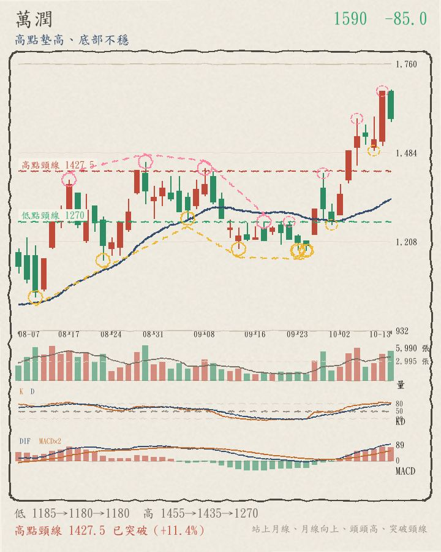
12:30 盤中 1590（-5.07%），比加權指數弱 3.37 個百分點、站上月線 1325.5，已突破高點頸線 1427.5，高點還在墊高（但底部沒同步墊高）。
- 月線位置：現價 1590 在月線 1325.5 之上（+19.9%）；5 日線 1552 也在月線之上（短均在上）；月線向上
- 量能：以已過交易時間推估，今天成交量約是 20 日均量的 2.83 倍（爆量），比 20 日均量大不少；下跌卻量增，量價背離
- 關鍵價位：高點頸線 1427.5 已站上；前一交易日高點 1675（低於 5.1%）；今天盤中高點 1680（低於 5.4%）；今天盤中低點 1580（高於 0.6%）
- 轉折結構：高點 1455、1435、1270 墊高（頭頭高），但低點 1185、1180、1180 沒有同步墊高；還沒確認的轉折低點 10-01 1260、10-08 1490；還沒確認的轉折高點 10-06 1590、10-12 1675（圖上虛線小圈）
日月光投控 3711 上市
737 -25.0（-3.28%）
上升趨勢（底底高＋頭頭高） 盤中成交值 78.93 億・全榜第 31 名（上市第 26 名）・相對大盤 -1.58
好條件 4/8：站上月線、月線向上、底底高、頭頭高
不好條件 3/8：今日下跌、相對大盤弱、貼近今日低點（1% 內）
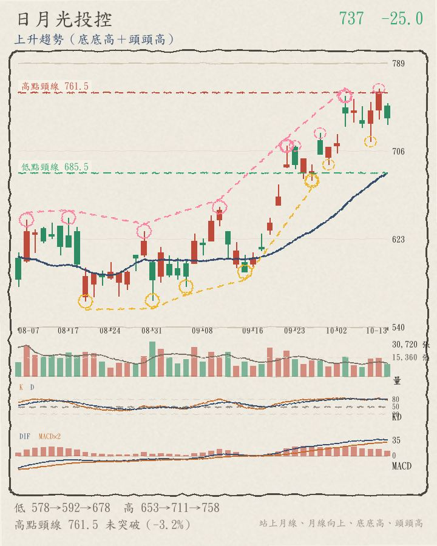
12:30 盤中 737（-3.28%），比加權指數弱 1.58 個百分點、站上月線 680.7，離高點頸線 761.5 還差 3.2%，轉折結構仍是底底高＋頭頭高。
- 月線位置：現價 737 在月線 680.7 之上（+8.3%）；5 日線 744.8 也在月線之上（短均在上）；月線向上
- 量能：以已過交易時間推估，今天成交量約是 20 日均量的 0.96 倍（量平），跟 20 日均量差不多
- 關鍵價位：高點頸線 761.5 還沒突破，差 3.2%；前一交易日高點 765（低於 3.7%）；今天盤中高點 751（低於 1.9%）；今天盤中低點 731（高於 0.8%）
- 轉折結構：低點 578、592、678 一路墊高、高點 653、711、758 也一路墊高，是底底高＋頭頭高；還沒確認的轉折低點 10-01 693、10-08 715；還沒確認的轉折高點 10-05 758、10-12 765（圖上虛線小圈）
創意 3443 上市
7985 -115.0（-1.42%）
上升趨勢（底底高＋頭頭高） 盤中成交值 78.65 億・全榜第 32 名（上市第 27 名）・相對大盤 +0.28
好條件 6/8：站上月線、月線向上、底底高、頭頭高、相對大盤強、守住今日高檔（距今日高點 1% 內）
不好條件 1/8：今日下跌
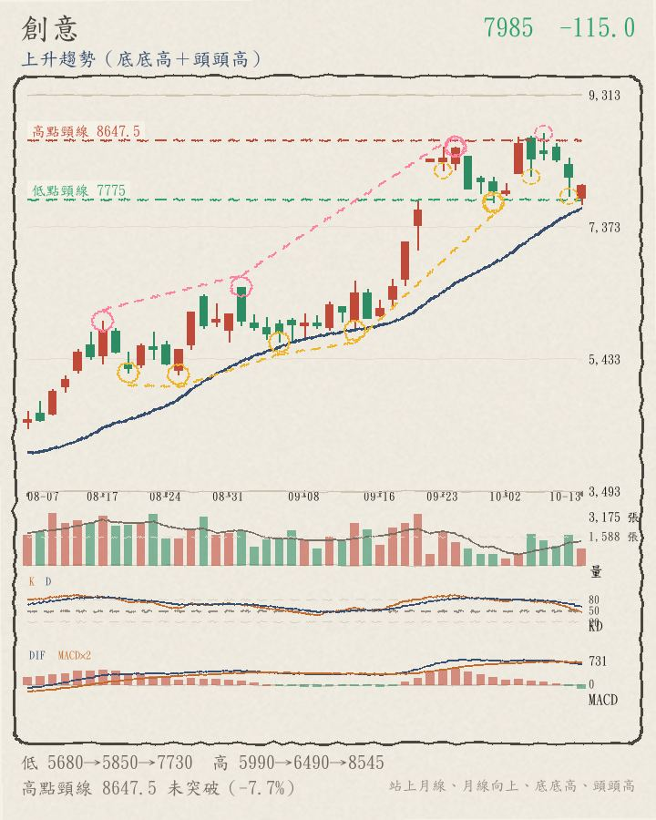
12:30 盤中 7985（-1.42%），比加權指數強 0.28 個百分點、站上月線 7558，離高點頸線 8647.5 還差 7.7%，轉折結構仍是底底高＋頭頭高。
- 月線位置：現價 7985 在月線 7558 之上（+5.7%）；5 日線 8379 也在月線之上（短均在上）；月線向上
- 量能：以已過交易時間推估，今天成交量約是 20 日均量的 0.85 倍（量平），比 20 日均量少一些
- 關鍵價位：高點頸線 8647.5 還沒突破，差 7.7%；前一交易日高點 8385（低於 4.8%）；今天盤中高點 8000（低於 0.2%）；今天盤中低點 7700（高於 3.7%）
- 轉折結構：低點 5680、5850、7730 一路墊高、高點 5990、6490、8545 也一路墊高，是底底高＋頭頭高；還沒確認的轉折低點 10-06 8110、10-12 7820；還沒確認的轉折高點 09-24 8545、10-07 8750（圖上虛線小圈）
鴻海 2317 上市
241 -3.5（-1.43%）
底部墊高、未過前高 盤中成交值 75.73 億・全榜第 33 名（上市第 28 名）・相對大盤 +0.27
好條件 2/8：底底高、相對大盤強
不好條件 7/8：跌破前低、今日下跌、在月線之下、量增下跌（出貨）、貼近今日低點（1% 內）、跌破昨日低點、月線下彎
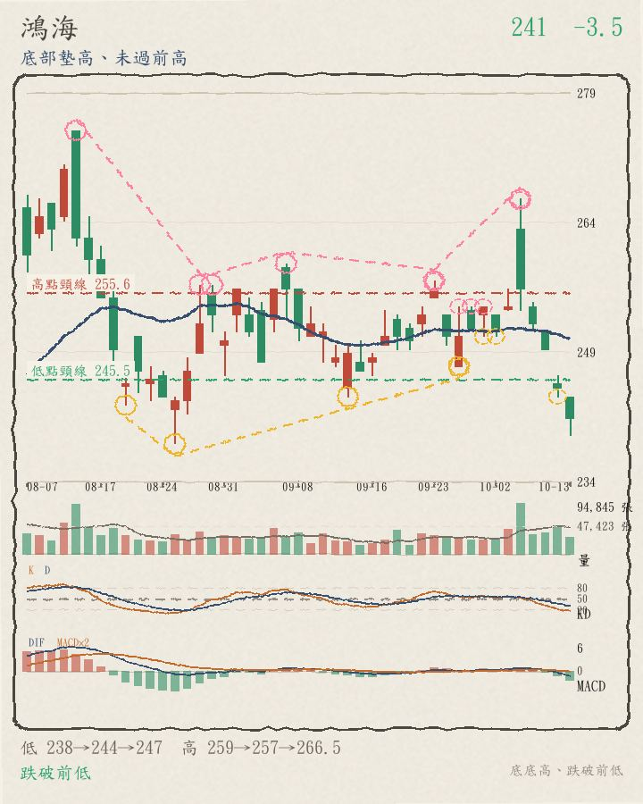
12:30 盤中 241（-1.43%），比加權指數強 0.27 個百分點、跌破月線 250.75，離高點頸線 255.6 還差 5.7%，底部還在墊高（但高點沒同步創高）。
- 月線位置：現價 241 在月線 250.75 之下（-3.9%）；5 日線 251.1 也在月線之上（短均在上）；月線向下
- 量能：以已過交易時間推估，今天成交量約是 20 日均量的 1.23 倍（量增），比 20 日均量大不少；下跌卻量增，量價背離
- 關鍵價位：已跌破前一個轉折低點；高點頸線 255.6 還在現價上方 5.7%；前一交易日高點 246（低於 2.0%）；今天盤中高點 243.5（低於 1.0%）；今天盤中低點 239（高於 0.8%）
- 轉折結構：低點 238、243.5、247 墊高（底底高），但高點 259、257、266.5 沒有同步創高；還沒確認的轉折低點 10-02 250.5、10-12 243.5；還沒確認的轉折高點 10-01 254、10-06 266.5（圖上虛線小圈）
群聯 8299 上櫃
1970 -85.0（-4.14%）
區間或轉弱 盤中成交值 75.1 億・全榜第 34 名（上櫃第 6 名）・相對大盤 -2.44
好條件 1/8：月線向上
不好條件 6/8：跌破前低、今日下跌、相對大盤弱、在月線之下、量增下跌（出貨）、跌破昨日低點
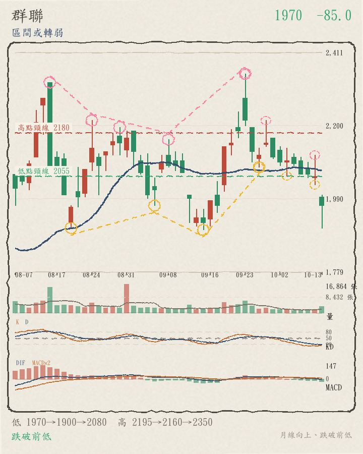
12:30 盤中 1970（-4.14%），比加權指數弱 2.44 個百分點、跌破月線 2075.75，離高點頸線 2180 還差 9.6%，轉折還沒走出明顯方向。
- 月線位置：現價 1970 在月線 2075.75 之下（-5.1%）；5 日線 2073 也在月線之下（短均在下）；月線向上
- 量能：以已過交易時間推估，今天成交量約是 20 日均量的 1.62 倍（爆量），比 20 日均量大不少；下跌卻量增，量價背離
- 關鍵價位：已跌破前一個轉折低點；高點頸線 2180 還在現價上方 9.6%；前一交易日高點 2115（低於 6.9%）；今天盤中高點 2000（低於 1.5%）；今天盤中低點 1905（高於 3.4%）
- 轉折結構：低點 1970、1900、2080 與高點 2195、2160、2350 都沒有明顯遞增，屬於區間震盪或轉弱；還沒確認的轉折低點 10-05 2055、10-12 2030；還沒確認的轉折高點 09-30 2215、10-12 2115（圖上虛線小圈）
旺矽 6223 上櫃
5970 -160.0（-2.61%）
高點墊高、底部不穩 盤中成交值 70.09 億・全榜第 35 名（上櫃第 7 名）・相對大盤 -0.91
好條件 4/8：站上月線、月線向上、頭頭高、突破頸線
不好條件 3/8：今日下跌、相對大盤弱、量增下跌（出貨）
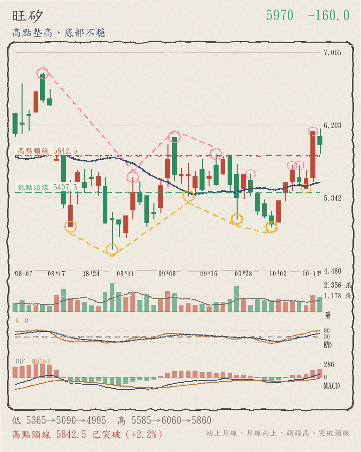
12:30 盤中 5970（-2.61%），比加權指數弱 0.91 個百分點、站上月線 5506.25，已突破高點頸線 5842.5，高點還在墊高（但底部沒同步墊高）。
- 月線位置：現價 5970 在月線 5506.25 之上（+8.4%）；5 日線 5685 也在月線之上（短均在上）；月線向上
- 量能：以已過交易時間推估，今天成交量約是 20 日均量的 1.79 倍（爆量），比 20 日均量大不少；下跌卻量增，量價背離
- 關鍵價位：高點頸線 5842.5 已站上；前一交易日高點 6130（低於 2.6%）；今天盤中高點 6160（低於 3.1%）；今天盤中低點 5860（高於 1.9%）
- 轉折結構：高點 5585、6060、5860 墊高（頭頭高），但低點 5365、5090、4995 沒有同步墊高；還沒確認的轉折低點 10-01 4995、10-08 5450；還沒確認的轉折高點 10-07 5725、10-12 6130（圖上虛線小圈）
景碩 3189 上市
1030 -30.0（-2.83%）
區間或轉弱 盤中成交值 69.19 億・全榜第 36 名（上市第 29 名）・相對大盤 -1.13
好條件 3/8：站上月線、月線向上、守住今日高檔（距今日高點 1% 內）
不好條件 3/8：今日下跌、相對大盤弱、跌破昨日低點
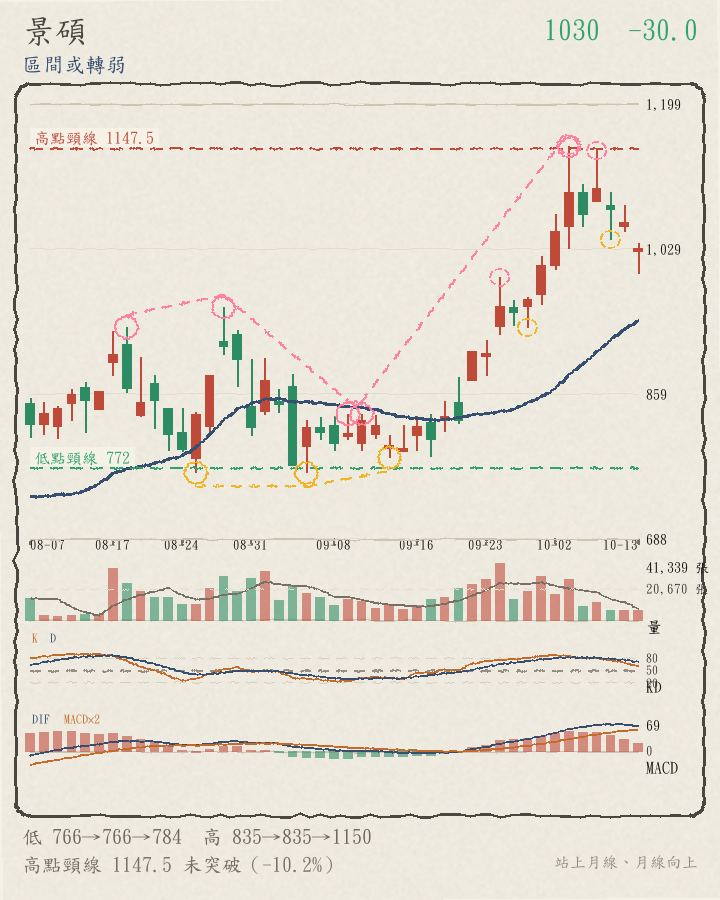
12:30 盤中 1030（-2.83%），比加權指數弱 1.13 個百分點、站上月線 934.4，離高點頸線 1147.5 還差 10.2%，轉折還沒走出明顯方向。
- 月線位置：現價 1030 在月線 934.4 之上（+10.2%）；5 日線 1080 也在月線之上（短均在上）；月線向上
- 量能：以已過交易時間推估，今天成交量約是 20 日均量的 0.48 倍（量縮），比 20 日均量少很多
- 關鍵價位：高點頸線 1147.5 還沒突破，差 10.2%；前一交易日高點 1080（低於 4.6%）；今天盤中高點 1035（低於 0.5%）；今天盤中低點 1000（高於 3.0%）
- 轉折結構：低點 766、766、784 與高點 835、835、1150 都沒有明顯遞增，屬於區間震盪或轉弱；還沒確認的轉折低點 09-30 937、10-08 1040；還沒確認的轉折高點 10-05 1150、10-07 1145（圖上虛線小圈）
愛普* 6531 上市
931 -16.0（-1.69%）
區間或轉弱 盤中成交值 68.77 億・全榜第 37 名（上市第 30 名）・相對大盤 +0.01
好條件 2/8：月線向上、相對大盤強
不好條件 3/8：今日下跌、在月線之下、量增下跌（出貨）
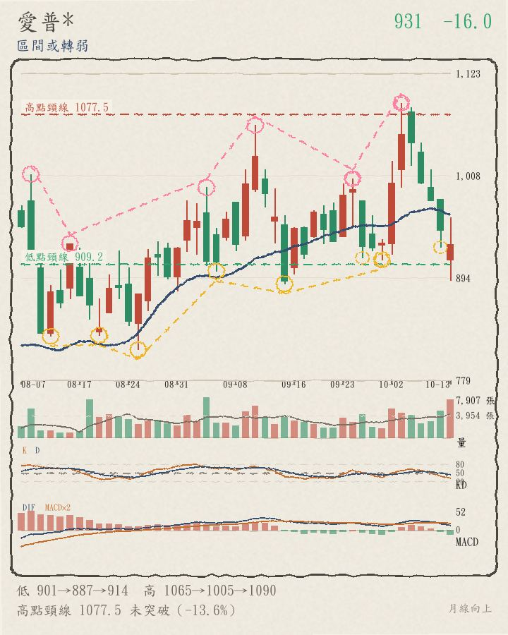
12:30 盤中 931（-1.69%），比加權指數強 0.01 個百分點、跌破月線 969.25，離高點頸線 1077.5 還差 13.6%，轉折還沒走出明顯方向。
- 月線位置：現價 931 在月線 969.25 之下（-4.0%）；5 日線 1005.4 也在月線之上（短均在上）；月線向上
- 量能：以已過交易時間推估，今天成交量約是 20 日均量的 2.70 倍（爆量），比 20 日均量大不少；下跌卻量增，量價背離
- 關鍵價位：高點頸線 1077.5 還沒突破，差 13.6%；前一交易日高點 982（低於 5.2%）；今天盤中高點 961（低於 3.1%）；今天盤中低點 891（高於 4.5%）
- 轉折結構：低點 901、887、914 與高點 1065、1005、1090 都沒有明顯遞增，屬於區間震盪或轉弱；還沒確認的轉折低點 10-01 914、10-12 928；還沒確認的轉折高點 09-24 1005、10-05 1090（圖上虛線小圈）
川湖 2059 上市
10090 -490.0（-4.63%）
區間或轉弱 盤中成交值 68.51 億・全榜第 38 名（上市第 31 名）・相對大盤 -2.93
好條件 0/8：無
不好條件 8/8：跌破前低、今日下跌、相對大盤弱、在月線之下、量增下跌（出貨）、貼近今日低點（1% 內）、跌破昨日低點、月線下彎
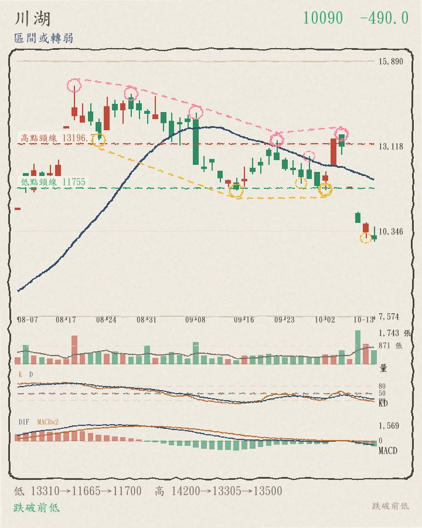
12:30 盤中 10090（-4.63%），比加權指數弱 2.93 個百分點、跌破月線 12151，離高點頸線 13196.7 還差 23.5%，轉折還沒走出明顯方向。
- 月線位置：現價 10090 在月線 12151 之下（-17.0%）；5 日線 11888 也在月線之下（短均在下）；月線向下
- 量能：以已過交易時間推估，今天成交量約是 20 日均量的 1.94 倍（爆量），比 20 日均量大不少；下跌卻量增，量價背離
- 關鍵價位：已跌破前一個轉折低點；高點頸線 13196.7 還在現價上方 23.5%；前一交易日高點 10625（低於 5.0%）；今天盤中高點 10490（低於 3.8%）；今天盤中低點 10015（高於 0.7%）
- 轉折結構：低點 13310、11665、11700 與高點 14200、13305、13500 都沒有明顯遞增，屬於區間震盪或轉弱；還沒確認的轉折低點 10-02 11700、10-12 10120；還沒確認的轉折高點 09-30 12785、10-06 13500（圖上虛線小圈）
宏致 3605 上市
185 +6.0（+3.35%）
底部墊高、未過前高 盤中成交值 68.37 億・全榜第 39 名（上市第 32 名）・相對大盤 +5.05
好條件 5/8：站上月線、月線向上、底底高、相對大盤強、攻擊量（量增＋上漲）
不好條件 0/8：無
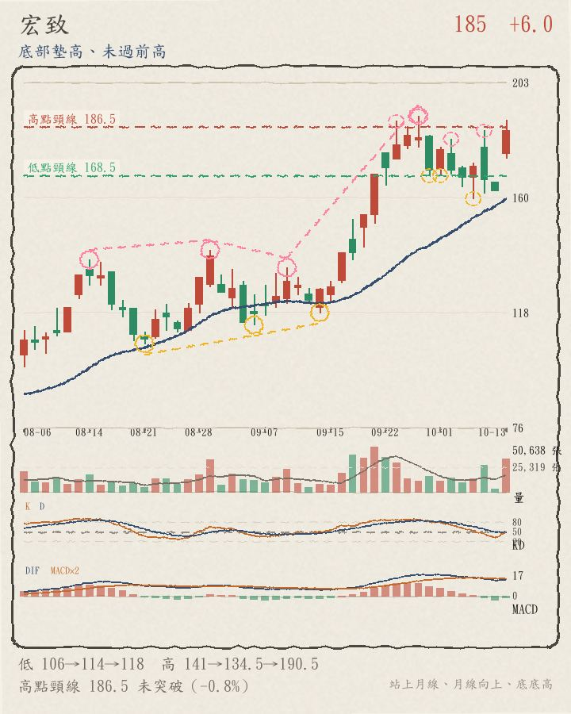
12:30 盤中 185（+3.35%），比加權指數強 5.05 個百分點、站上月線 157.175，離高點頸線 186.5 還差 0.8%，底部還在墊高（但高點沒同步創高）。
- 月線位置：現價 185 在月線 157.175 之上（+17.7%）；5 日線 168.1 也在月線之上（短均在上）；月線向上
- 量能：以已過交易時間推估，今天成交量約是 20 日均量的 2.25 倍（爆量），比 20 日均量大不少；上漲又量增，量價配合
- 關鍵價位：高點頸線 186.5 還沒突破，差 0.8%；前一交易日高點 166（高於 11.4%）；今天盤中高點 189（低於 2.1%）；今天盤中低點 175（高於 5.7%）
- 轉折結構：低點 106.5、113.5、118 墊高（底底高），但高點 141、134.5、190.5 沒有同步創高；還沒確認的轉折低點 10-01 168.5、10-06 160；還沒確認的轉折高點 10-02 182、10-07 185（圖上虛線小圈）
和碩 4938 上市
103 +4.4（+4.46%）
高點墊高、底部不穩 盤中成交值 68.25 億・全榜第 40 名（上市第 33 名）・相對大盤 +6.16
好條件 5/8：站上月線、頭頭高、突破頸線、相對大盤強、攻擊量（量增＋上漲）
不好條件 1/8：月線下彎
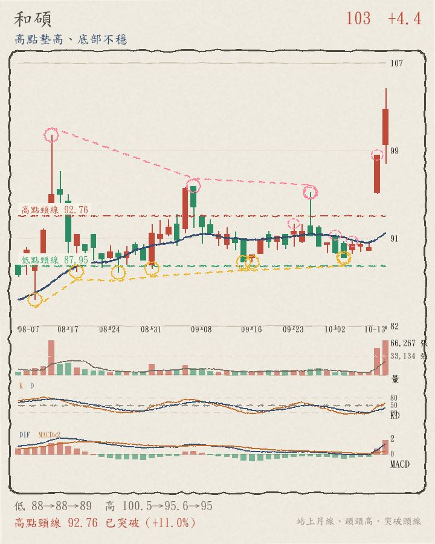
12:30 盤中 103（+4.46%），比加權指數強 6.16 個百分點、站上月線 90.53，已突破高點頸線 92.76，高點還在墊高（但底部沒同步墊高）。
- 月線位置：現價 103 在月線 90.53 之上（+13.8%）；5 日線 91.4 也在月線之上（短均在上）；月線向下
- 量能：以已過交易時間推估，今天成交量約是 20 日均量的 12.33 倍（爆量），比 20 日均量大不少；上漲又量增，量價配合
- 關鍵價位：高點頸線 92.76 已站上；前一交易日高點 98.6（高於 4.5%）；今天盤中高點 105（低於 1.9%）；今天盤中低點 97.8（高於 5.3%）
- 轉折結構：高點 100.5、95.6、95 墊高（頭頭高），但低點 88.3、88.3、88.7 沒有同步墊高；還沒確認的轉折低點 10-05 88.7；還沒確認的轉折高點 10-06 90.3、10-12 98.6（圖上虛線小圈）
禾伸堂 3026 上市
809 -31.0（-3.69%）
上升趨勢（底底高＋頭頭高） 盤中成交值 62.16 億・全榜第 41 名（上市第 34 名）・相對大盤 -1.99
好條件 4/8：站上月線、月線向上、底底高、頭頭高
不好條件 3/8：今日下跌、相對大盤弱、跌破昨日低點
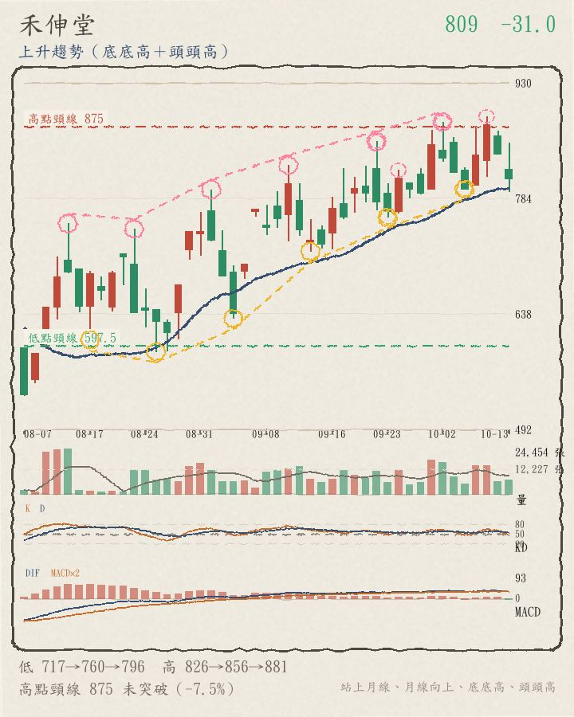
12:30 盤中 809（-3.69%），比加權指數弱 1.99 個百分點、站上月線 796.25，離高點頸線 875 還差 7.5%，轉折結構仍是底底高＋頭頭高。
- 月線位置：現價 809 在月線 796.25 之上（+1.6%）；5 日線 833.8 也在月線之上（短均在上）；月線向上
- 量能：以已過交易時間推估，今天成交量約是 20 日均量的 0.91 倍（量平），比 20 日均量少一些
- 關鍵價位：高點頸線 875 還沒突破，差 7.5%；前一交易日高點 869（低於 6.9%）；今天盤中高點 854（低於 5.3%）；今天盤中低點 793（高於 2.0%）
- 轉折結構：低點 717、760、796 一路墊高、高點 826、856、881 也一路墊高，是底底高＋頭頭高；還沒確認的轉折低點 09-23 760、10-06 796；還沒確認的轉折高點 10-02 881、10-08 888（圖上虛線小圈）
奇鋐 3017 上市
3310 -75.0（-2.22%）
區間或轉弱 盤中成交值 60.11 億・全榜第 42 名（上市第 35 名）・相對大盤 -0.52
好條件 1/8：月線向上
不好條件 4/8：今日下跌、相對大盤弱、在月線之下、跌破昨日低點
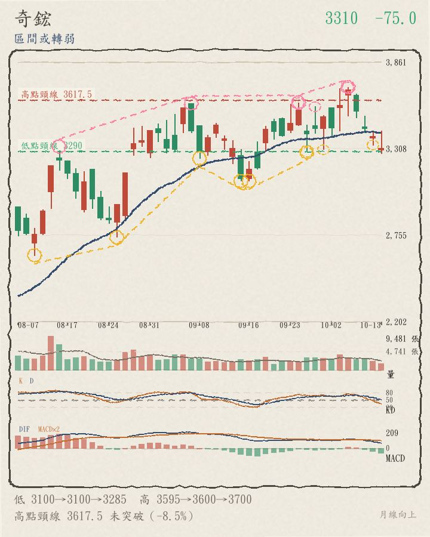
12:30 盤中 3310（-2.22%），比加權指數弱 0.52 個百分點、跌破月線 3415，離高點頸線 3617.5 還差 8.5%，轉折還沒走出明顯方向。
- 月線位置：現價 3310 在月線 3415 之下（-3.1%）；5 日線 3528 也在月線之上（短均在上）；月線向上
- 量能：以已過交易時間推估，今天成交量約是 20 日均量的 0.83 倍（量平），比 20 日均量少很多
- 關鍵價位：高點頸線 3617.5 還沒突破，差 8.5%；前一交易日高點 3410（低於 2.9%）；今天盤中高點 3420（低於 3.2%）；今天盤中低點 3275（高於 1.1%）
- 轉折結構：低點 3100、3100、3285 與高點 3595、3600、3700 都沒有明顯遞增，屬於區間震盪或轉弱；還沒確認的轉折低點 10-01 3300、10-12 3330；還沒確認的轉折高點 09-30 3575、10-06 3700（圖上虛線小圈）
台虹 8039 上市
281 -15.0（-5.07%）
高點墊高、底部不穩 盤中成交值 57.76 億・全榜第 43 名（上市第 36 名）・相對大盤 -3.37
好條件 3/8：站上月線、月線向上、頭頭高
不好條件 4/8：今日下跌、相對大盤弱、量增下跌（出貨）、跌破昨日低點
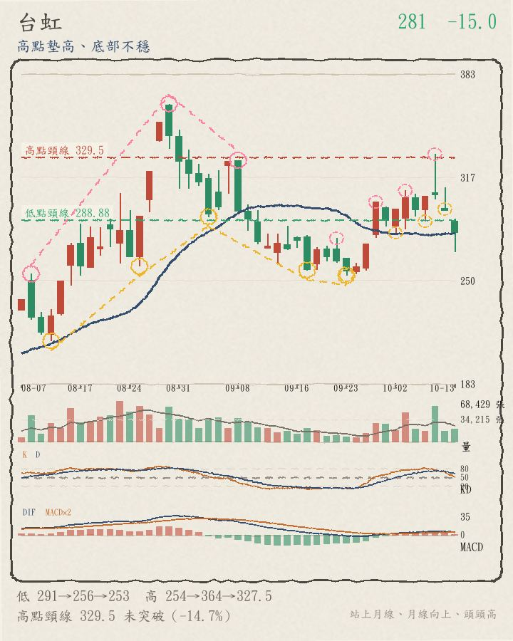
12:30 盤中 281（-5.07%），比加權指數弱 3.37 個百分點、站上月線 279.925，離高點頸線 329.5 還差 14.7%，高點還在墊高（但底部沒同步墊高）。
- 月線位置：現價 281 在月線 279.925 之上（+0.4%）；5 日線 301 也在月線之上（短均在上）；月線向上
- 量能：以已過交易時間推估，今天成交量約是 20 日均量的 1.20 倍（量增），比 20 日均量大不少；下跌卻量增，量價背離
- 關鍵價位：高點頸線 329.5 還沒突破，差 14.7%；前一交易日高點 310（低於 9.4%）；今天盤中高點 289.5（低於 2.9%）；今天盤中低點 268.5（高於 4.7%）
- 轉折結構：高點 254、364、327.5 墊高（頭頭高），但低點 291、256.5、253 沒有同步墊高；還沒確認的轉折低點 10-07 288、10-12 296；還沒確認的轉折高點 10-05 308、10-08 331.5（圖上虛線小圈）
富喬 1815 上櫃
128 -5.0（-3.76%）
上升趨勢（底底高＋頭頭高） 盤中成交值 56.58 億・全榜第 44 名（上櫃第 8 名）・相對大盤 -2.06
好條件 4/8：站上月線、月線向上、底底高、頭頭高
不好條件 3/8：今日下跌、相對大盤弱、跌破昨日低點
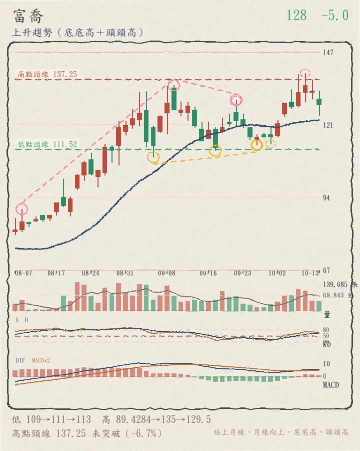
12:30 盤中 128（-3.76%），比加權指數弱 2.06 個百分點、站上月線 122.1，離高點頸線 137.25 還差 6.7%，轉折結構仍是底底高＋頭頭高。
- 月線位置：現價 128 在月線 122.1 之上（+4.8%）；5 日線 131.2 也在月線之上（短均在上）；月線向上
- 量能：以已過交易時間推估，今天成交量約是 20 日均量的 1.03 倍（量平），跟 20 日均量差不多
- 關鍵價位：高點頸線 137.25 還沒突破，差 6.7%；前一交易日高點 137（低於 6.6%）；今天盤中高點 133（低於 3.8%）；今天盤中低點 124（高於 3.2%）
- 轉折結構：低點 108.571、111、113 一路墊高、高點 89.4284、135、129.5 也一路墊高，是底底高＋頭頭高；還沒確認的轉折低點 09-29 113、10-01 113.5；還沒確認的轉折高點 09-22 129.5、10-08 139.5（圖上虛線小圈）
華通 2313 上市
243 -9.0（-3.57%）
上升趨勢（底底高＋頭頭高） 盤中成交值 52.83 億・全榜第 45 名（上市第 37 名）・相對大盤 -1.87
好條件 4/8：站上月線、月線向上、底底高、頭頭高
不好條件 4/8：今日下跌、相對大盤弱、量增下跌（出貨）、跌破昨日低點
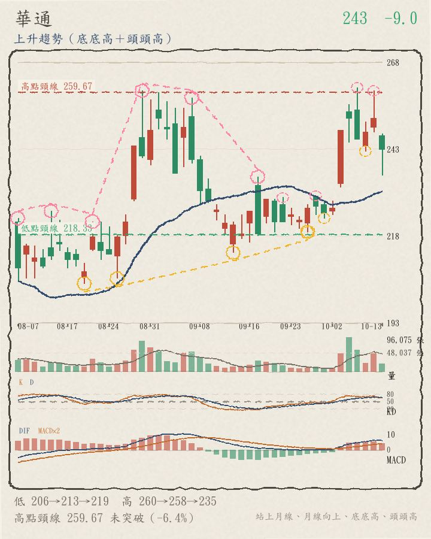
12:30 盤中 243（-3.57%），比加權指數弱 1.87 個百分點、站上月線 229.925，離高點頸線 259.67 還差 6.4%，轉折結構仍是底底高＋頭頭高。
- 月線位置：現價 243 在月線 229.925 之上（+5.7%）；5 日線 249.3 也在月線之上（短均在上）；月線向上
- 量能：以已過交易時間推估，今天成交量約是 20 日均量的 1.21 倍（量增），比 20 日均量大不少；下跌卻量增，量價背離
- 關鍵價位：高點頸線 259.67 還沒突破，差 6.4%；前一交易日高點 260（低於 6.5%）；今天盤中高點 247.5（低於 1.8%）；今天盤中低點 235.5（高於 3.2%）
- 轉折結構：低點 205.5、213、219 一路墊高、高點 260、258、235 也一路墊高，是底底高＋頭頭高；還沒確認的轉折低點 10-01 223、10-08 242.5；還沒確認的轉折高點 10-07 261、10-12 260（圖上虛線小圈）
欣銓 3264 上櫃
268 -4.5（-1.65%）
高點墊高、底部不穩 盤中成交值 50.51 億・全榜第 46 名（上櫃第 9 名）・相對大盤 +0.05
好條件 5/8：站上月線、月線向上、頭頭高、突破頸線、相對大盤強
不好條件 2/8：今日下跌、量增下跌（出貨）
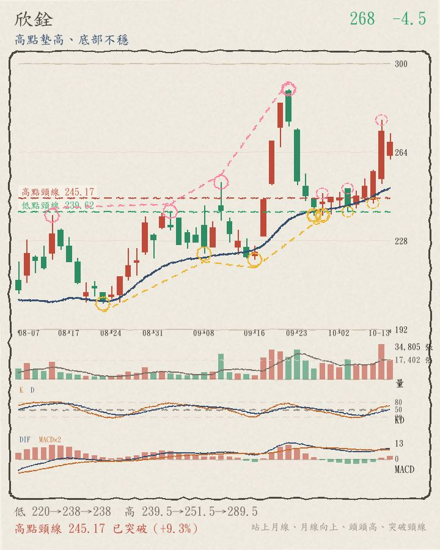
12:30 盤中 268（-1.65%），比加權指數強 0.05 個百分點、站上月線 247.75，已突破高點頸線 245.17，高點還在墊高（但底部沒同步墊高）。
- 月線位置：現價 268 在月線 247.75 之上（+8.2%）；5 日線 253.2 也在月線之上（短均在上）；月線向上
- 量能：以已過交易時間推估，今天成交量約是 20 日均量的 1.55 倍（爆量），比 20 日均量大不少；下跌卻量增，量價背離
- 關鍵價位：高點頸線 245.17 已站上；前一交易日高點 277（低於 3.2%）；今天盤中高點 271.5（低於 1.3%）；今天盤中低點 261（高於 2.7%）
- 轉折結構：高點 239.5、251.5、289.5 墊高（頭頭高），但低點 220、238、238 沒有同步墊高；還沒確認的轉折低點 10-05 239.5、10-08 243；還沒確認的轉折高點 10-05 249、10-12 277（圖上虛線小圈）
全新 2455 上市
512 -52.0（-9.22%）
高點墊高、底部不穩 盤中成交值 49.21 億・全榜第 47 名（上市第 38 名）・相對大盤 -7.52
好條件 2/8：月線向上、頭頭高
不好條件 7/8：跌破前低、今日下跌、相對大盤弱、在月線之下、量增下跌（出貨）、貼近今日低點（1% 內）、跌破昨日低點
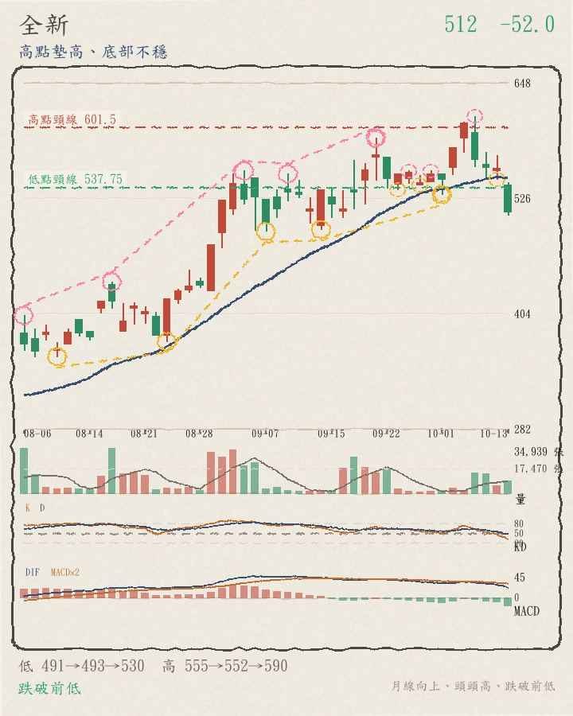
12:30 盤中 512（-9.22%），比加權指數弱 7.52 個百分點、跌破月線 548.8，離高點頸線 601.5 還差 14.9%，高點還在墊高（但底部沒同步墊高）。
- 月線位置：現價 512 在月線 548.8 之下（-6.7%）；5 日線 574 也在月線之上（短均在上）；月線向上
- 量能：以已過交易時間推估，今天成交量約是 20 日均量的 1.54 倍（爆量），比 20 日均量大不少；下跌卻量增，量價背離
- 關鍵價位：已跌破前一個轉折低點；高點頸線 601.5 還在現價上方 14.9%；前一交易日高點 571（低於 10.3%）；今天盤中高點 543（低於 5.7%）；今天盤中低點 508（高於 0.8%）
- 轉折結構：高點 555、552、590 墊高（頭頭高），但低點 491、493、530 沒有同步墊高；還沒確認的轉折低點 10-01 530、10-08 546；還沒確認的轉折高點 09-30 555、10-06 613（圖上虛線小圈）
旺宏 2337 上市
107 -8.5（-7.36%）
區間或轉弱 盤中成交值 48.81 億・全榜第 48 名（上市第 39 名）・相對大盤 -5.66
好條件 0/8：無
不好條件 7/8：跌破前低、今日下跌、相對大盤弱、在月線之下、量增下跌（出貨）、跌破昨日低點、月線下彎
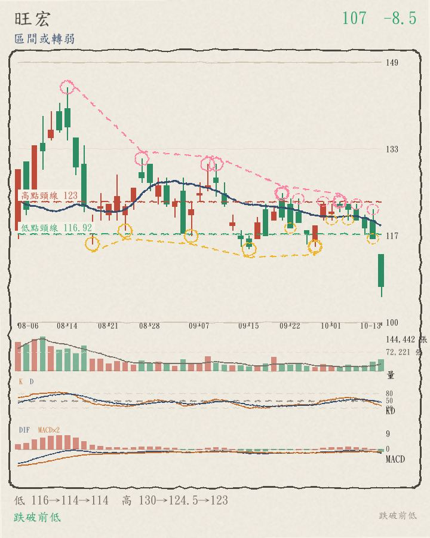
12:30 盤中 107（-7.36%），比加權指數弱 5.66 個百分點、跌破月線 119.4，離高點頸線 123 還差 13.0%，轉折還沒走出明顯方向。
- 月線位置：現價 107 在月線 119.4 之下（-10.4%）；5 日線 119.4 也在月線之上（短均在上）；月線向下
- 量能：以已過交易時間推估，今天成交量約是 20 日均量的 2.30 倍（爆量），比 20 日均量大不少；下跌卻量增，量價背離
- 關鍵價位：已跌破前一個轉折低點；高點頸線 123 還在現價上方 13.0%；前一交易日高點 121.5（低於 11.9%）；今天盤中高點 113（低於 5.3%）；今天盤中低點 105（高於 1.9%）
- 轉折結構：低點 116.5、114、114.5 與高點 130、124.5、123 都沒有明顯遞增，屬於區間震盪或轉弱；還沒確認的轉折低點 10-05 119.5、10-08 116；還沒確認的轉折高點 10-06 122.5、10-08 121.5（圖上虛線小圈）
頎邦 6147 上櫃
219.5 -9.5（-4.15%）
上升趨勢（底底高＋頭頭高） 盤中成交值 47.12 億・全榜第 49 名（上櫃第 10 名）・相對大盤 -2.45
好條件 4/8：站上月線、月線向上、底底高、頭頭高
不好條件 3/8：今日下跌、相對大盤弱、跌破昨日低點
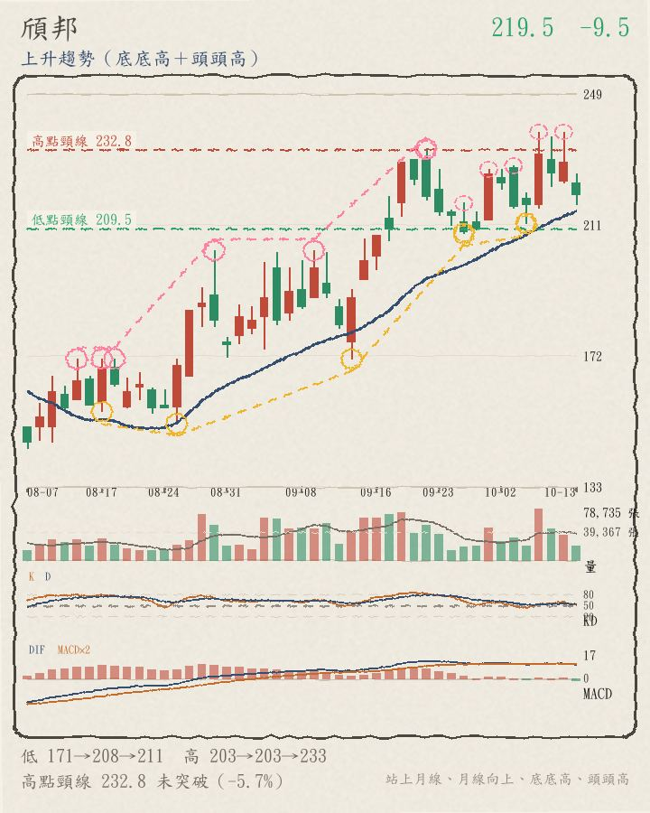
12:30 盤中 219.5（-4.15%），比加權指數弱 2.45 個百分點、站上月線 213.15，離高點頸線 232.8 還差 5.7%，轉折結構仍是底底高＋頭頭高。
- 月線位置：現價 219.5 在月線 213.15 之上（+3.0%）；5 日線 223.8 也在月線之上（短均在上）；月線向上
- 量能：以已過交易時間推估，今天成交量約是 20 日均量的 0.62 倍（量縮），比 20 日均量少很多
- 關鍵價位：高點頸線 232.8 還沒突破，差 5.7%；前一交易日高點 238（低於 7.8%）；今天盤中高點 225.5（低於 2.7%）；今天盤中低點 216.5（高於 1.4%）
- 轉折結構：低點 171、208、211 一路墊高、高點 203、203、233 也一路墊高，是底底高＋頭頭高；還沒確認的轉折低點 09-29 208、10-06 211；還沒確認的轉折高點 10-07 238、10-12 238（圖上虛線小圈）
健策 3653 上市
6995 -165.0（-2.30%）
高點墊高、底部不穩 盤中成交值 46.52 億・全榜第 50 名（上市第 40 名）・相對大盤 -0.60
好條件 3/8：站上月線、月線向上、頭頭高
不好條件 3/8：今日下跌、相對大盤弱、貼近今日低點（1% 內）
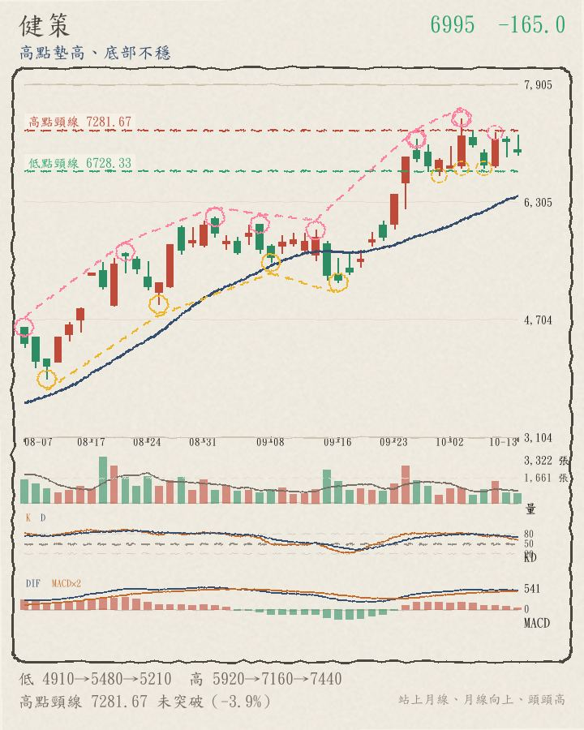
12:30 盤中 6995（-2.30%），比加權指數弱 0.60 個百分點、站上月線 6327，離高點頸線 7281.67 還差 3.9%，高點還在墊高（但底部沒同步墊高）。
- 月線位置：現價 6995 在月線 6327 之上（+10.6%）；5 日線 7083 也在月線之上（短均在上）；月線向上
- 量能：以已過交易時間推估，今天成交量約是 20 日均量的 0.73 倍（量平），比 20 日均量少很多
- 關鍵價位：高點頸線 7281.67 還沒突破，差 3.9%；前一交易日高點 7190（低於 2.7%）；今天盤中高點 7215（低於 3.0%）；今天盤中低點 6940（高於 0.8%）
- 轉折結構：高點 5920、7160、7440 墊高（頭頭高），但低點 4910、5480、5210 沒有同步墊高；還沒確認的轉折低點 10-05 6760、10-07 6760；還沒確認的轉折高點 10-05 7440、10-08 7245（圖上虛線小圈）
聯茂 6213 上市
775 -37.0（-4.56%）
高點墊高、底部不穩 盤中成交值 45.98 億・全榜第 51 名（上市第 41 名）・相對大盤 -2.86
好條件 4/8：站上月線、月線向上、頭頭高、突破頸線
不好條件 2/8：今日下跌、相對大盤弱
12:30 盤中 775（-4.56%），比加權指數弱 2.86 個百分點、站上月線 603.2，已突破高點頸線 564.5，高點還在墊高（但底部沒同步墊高）。
- 月線位置：現價 775 在月線 603.2 之上（+28.5%）；5 日線 764.6 也在月線之上（短均在上）；月線向上
- 量能：以已過交易時間推估，今天成交量約是 20 日均量的 0.40 倍（量縮），比 20 日均量少很多
- 關鍵價位：高點頸線 564.5 已站上；前一交易日高點 806（低於 3.8%）；今天盤中高點 801（低於 3.2%）；今天盤中低點 731（高於 6.0%）
- 轉折結構：高點 387.5、599、555 墊高（頭頭高），但低點 237、493.5、482 沒有同步墊高；還沒確認的轉折低點 10-01 611、10-08 763；還沒確認的轉折高點 09-30 649、10-06 818（圖上虛線小圈）
合晶 6182 上櫃
116.5 -7.5（-6.05%）
區間或轉弱 盤中成交值 45.38 億・全榜第 52 名（上櫃第 11 名）・相對大盤 -4.35
好條件 1/8：月線向上
不好條件 4/8：今日下跌、相對大盤弱、在月線之下、跌破昨日低點

12:30 盤中 116.5（-6.05%），比加權指數弱 4.35 個百分點、跌破月線 119.85，離高點頸線 138.5 還差 15.9%，轉折還沒走出明顯方向。
- 月線位置：現價 116.5 在月線 119.85 之下（-2.8%）；5 日線 129.5 也在月線之上（短均在上）；月線向上
- 量能：以已過交易時間推估，今天成交量約是 20 日均量的 0.68 倍（量縮），比 20 日均量少很多
- 關鍵價位：高點頸線 138.5 還沒突破，差 15.9%；前一交易日高點 128（低於 9.0%）；今天盤中高點 121.5（低於 4.1%）；今天盤中低點 113.5（高於 2.6%）
- 轉折結構：低點 103.5、104、100 與高點 125、140、140 都沒有明顯遞增，屬於區間震盪或轉弱；還沒確認的轉折低點 10-06 126.5、10-12 123；還沒確認的轉折高點 10-05 140、10-07 135.5（圖上虛線小圈）
光聖 6442 上市
1635 -90.0（-5.22%）
區間或轉弱 盤中成交值 44.46 億・全榜第 53 名（上市第 42 名）・相對大盤 -3.52
好條件 2/8：站上月線、月線向上
不好條件 4/8：今日下跌、相對大盤弱、量增下跌（出貨）、跌破昨日低點
12:30 盤中 1635（-5.22%），比加權指數弱 3.52 個百分點、站上月線 1604.25，離高點頸線 1718.33 還差 4.8%，轉折還沒走出明顯方向。
- 月線位置：現價 1635 在月線 1604.25 之上（+1.9%）；5 日線 1736 也在月線之上（短均在上）；月線向上
- 量能：以已過交易時間推估，今天成交量約是 20 日均量的 1.61 倍（爆量），比 20 日均量大不少；下跌卻量增，量價背離
- 關鍵價位：高點頸線 1718.33 還沒突破，差 4.8%；前一交易日高點 1785（低於 8.4%）；今天盤中高點 1730（低於 5.5%）；今天盤中低點 1555（高於 5.1%）
- 轉折結構：低點 1560、1495、1465 與高點 1705、1695、1920 都沒有明顯遞增，屬於區間震盪或轉弱；還沒確認的轉折低點 10-08 1715、10-12 1715；還沒確認的轉折高點 10-05 1755、10-07 1815（圖上虛線小圈）
華新科 2492 上市
393.5 -24.5（-5.86%）
上升趨勢（底底高＋頭頭高） 盤中成交值 44.26 億・全榜第 54 名（上市第 43 名）・相對大盤 -4.16
好條件 5/8：站上月線、月線向上、底底高、頭頭高、突破頸線
不好條件 3/8：今日下跌、相對大盤弱、跌破昨日低點
12:30 盤中 393.5（-5.86%），比加權指數弱 4.16 個百分點、站上月線 335.9，已突破高點頸線 321.33，轉折結構仍是底底高＋頭頭高。
- 月線位置：現價 393.5 在月線 335.9 之上（+17.1%）；5 日線 404.8 也在月線之上（短均在上）；月線向上
- 量能：以已過交易時間推估，今天成交量約是 20 日均量的 0.40 倍（量縮），比 20 日均量少很多
- 關鍵價位：高點頸線 321.33 已站上；前一交易日高點 422.5（低於 6.9%）；今天盤中高點 410（低於 4.0%）；今天盤中低點 376.5（高於 4.5%）
- 轉折結構：低點 270、291、298.5 一路墊高、高點 317、344、326 也一路墊高，是底底高＋頭頭高；還沒確認的轉折低點 09-30 298.5、10-06 362.5；還沒確認的轉折高點 10-05 396、10-08 431.5（圖上虛線小圈）
台星科 3265 上櫃
265.5 +3.5（+1.34%）
上升趨勢（底底高＋頭頭高） 盤中成交值 43.18 億・全榜第 55 名（上櫃第 12 名）・相對大盤 +3.04
好條件 7/8：站上月線、月線向上、底底高、頭頭高、突破頸線、相對大盤強、攻擊量（量增＋上漲）
不好條件 0/8：無
12:30 盤中 265.5（+1.34%），比加權指數強 3.04 個百分點、站上月線 182.55，已突破高點頸線 190.25，轉折結構仍是底底高＋頭頭高。
- 月線位置：現價 265.5 在月線 182.55 之上（+45.4%）；5 日線 205.8 也在月線之上（短均在上）；月線向上
- 量能：以已過交易時間推估，今天成交量約是 20 日均量的 11.61 倍（爆量），比 20 日均量大不少；上漲又量增，量價配合
- 關鍵價位：高點頸線 190.25 已站上；前一交易日高點 238.5（高於 11.3%）；今天盤中高點 273（低於 2.7%）；今天盤中低點 259（高於 2.5%）
- 轉折結構：低點 131、158.5、159.5 一路墊高、高點 188、198、193 也一路墊高，是底底高＋頭頭高；還沒確認的轉折低點 09-24 178.5、10-01 181.5；還沒確認的轉折高點 10-02 193、10-08 238.5（圖上虛線小圈）
群創 3481 上市
50.1 -1.2（-2.34%）
高點墊高、底部不穩 盤中成交值 42.01 億・全榜第 56 名（上市第 44 名）・相對大盤 -0.64
好條件 2/8：月線向上、頭頭高
不好條件 4/8：今日下跌、相對大盤弱、在月線之下、貼近今日低點（1% 內）
12:30 盤中 50.1（-2.34%），比加權指數弱 0.64 個百分點、跌破月線 50.237，離高點頸線 55.85 還差 10.3%，高點還在墊高（但底部沒同步墊高）。
- 月線位置：現價 50.1 在月線 50.237 之下（-0.3%）；5 日線 51.64 也在月線之上（短均在上）；月線向上
- 量能：以已過交易時間推估，今天成交量約是 20 日均量的 0.52 倍（量縮），比 20 日均量少很多
- 關鍵價位：高點頸線 55.85 還沒突破，差 10.3%；前一交易日高點 52（低於 3.7%）；今天盤中高點 51.2（低於 2.1%）；今天盤中低點 49.95（高於 0.3%）
- 轉折結構：高點 51.6、52.2、56.2 墊高（頭頭高），但低點 48、46.25、48.55 沒有同步墊高；還沒確認的轉折低點 10-07 50.7、10-12 49.5；還沒確認的轉折高點 10-01 55.5、10-05 56.2（圖上虛線小圈）
精材 3374 上櫃
476 -5.5（-1.14%）
底部墊高、未過前高 盤中成交值 40.83 億・全榜第 57 名（上櫃第 13 名）・相對大盤 +0.56
好條件 5/8：站上月線、月線向上、底底高、相對大盤強、守住今日高檔（距今日高點 1% 內）
不好條件 2/8：今日下跌、跌破昨日低點
12:30 盤中 476（-1.14%），比加權指數強 0.56 個百分點、站上月線 461.625，離高點頸線 521 還差 8.6%，底部還在墊高（但高點沒同步創高）。
- 月線位置：現價 476 在月線 461.625 之上（+3.1%）；5 日線 492.3 也在月線之上（短均在上）；月線向上
- 量能：以已過交易時間推估，今天成交量約是 20 日均量的 1.15 倍（量增），比 20 日均量大不少；下跌卻量增，量價背離
- 關鍵價位：高點頸線 521 還沒突破，差 8.6%；前一交易日高點 507（低於 6.1%）；今天盤中高點 478（低於 0.4%）；今天盤中低點 444（高於 7.2%）
- 轉折結構：低點 289、407、436.5 墊高（底底高），但高點 496、487、530 沒有同步創高；還沒確認的轉折低點 10-07 475.5、10-12 478；還沒確認的轉折高點 10-06 530、10-08 512（圖上虛線小圈）
貿聯-KY 3665 上市
2255 -100.0（-4.25%）
高點墊高、底部不穩 盤中成交值 40.32 億・全榜第 58 名（上市第 45 名）・相對大盤 -2.55
好條件 2/8：月線向上、頭頭高
不好條件 3/8：今日下跌、相對大盤弱、在月線之下
12:30 盤中 2255（-4.25%），比加權指數弱 2.55 個百分點、跌破月線 2257.75，離高點頸線 2373.33 還差 5.0%，高點還在墊高（但底部沒同步墊高）。
- 月線位置：現價 2255 在月線 2257.75 之下（-0.1%）；5 日線 2368 也在月線之上（短均在上）；月線向上
- 量能：以已過交易時間推估，今天成交量約是 20 日均量的 0.64 倍（量縮），比 20 日均量少很多
- 關鍵價位：高點頸線 2373.33 還沒突破，差 5.0%；前一交易日高點 2360（低於 4.4%）；今天盤中高點 2345（低於 3.8%）；今天盤中低點 2215（高於 1.8%）
- 轉折結構：高點 2360、2375、2685 墊高（頭頭高），但低點 2095、1930、1810 沒有同步墊高；還沒確認的轉折低點 10-06 2260、10-12 2250；還沒確認的轉折高點 10-02 2670、10-08 2400（圖上虛線小圈）
聯鈞 3450 上市
476 -43.0（-8.29%）
底部墊高、未過前高 盤中成交值 40.04 億・全榜第 59 名（上市第 46 名）・相對大盤 -6.59
好條件 1/8：底底高
不好條件 7/8：跌破前低、今日下跌、相對大盤弱、在月線之下、量增下跌（出貨）、跌破昨日低點、月線下彎
12:30 盤中 476（-8.29%），比加權指數弱 6.59 個百分點、跌破月線 525.325，離高點頸線 559.4 還差 14.9%，底部還在墊高（但高點沒同步創高）。
- 月線位置：現價 476 在月線 525.325 之下（-9.4%）；5 日線 535.8 也在月線之上（短均在上）；月線向下
- 量能：以已過交易時間推估，今天成交量約是 20 日均量的 1.38 倍（量增），比 20 日均量大不少；下跌卻量增，量價背離
- 關鍵價位：已跌破前一個轉折低點；高點頸線 559.4 還在現價上方 14.9%；前一交易日高點 533（低於 10.7%）；今天盤中高點 507（低於 6.1%）；今天盤中低點 470（高於 1.3%）
- 轉折結構：低點 483、489、505 墊高（底底高），但高點 653、565、574 沒有同步創高；還沒確認的轉折低點 10-06 530、10-08 518；還沒確認的轉折高點 10-05 574、10-07 559（圖上虛線小圈）
致茂 2360 上市
2185 -180.0（-7.61%）
高點墊高、底部不穩 盤中成交值 39.94 億・全榜第 60 名（上市第 47 名）・相對大盤 -5.91
好條件 2/8：月線向上、頭頭高
不好條件 5/8：今日下跌、相對大盤弱、在月線之下、貼近今日低點（1% 內）、跌破昨日低點
12:30 盤中 2185（-7.61%），比加權指數弱 5.91 個百分點、跌破月線 2239.5，離高點頸線 2497.5 還差 12.5%，高點還在墊高（但底部沒同步墊高）。
- 月線位置：現價 2185 在月線 2239.5 之下（-2.4%）；5 日線 2319 也在月線之上（短均在上）；月線向上
- 量能：以已過交易時間推估，今天成交量約是 20 日均量的 0.91 倍（量平），比 20 日均量少一些
- 關鍵價位：高點頸線 2497.5 還沒突破，差 12.5%；前一交易日高點 2390（低於 8.6%）；今天盤中高點 2320（低於 5.8%）；今天盤中低點 2180（高於 0.2%）
- 轉折結構：高點 2400、2490、2540 墊高（頭頭高），但低點 1875、2070、2025 沒有同步墊高；還沒確認的轉折低點 10-01 2025、10-08 2315；還沒確認的轉折高點 09-22 2540、10-07 2560（圖上虛線小圈）
金山電 8042 上櫃
145.5 +1.5（+1.04%）
上升趨勢（底底高＋頭頭高） 盤中成交值 39.09 億・全榜第 61 名（上櫃第 14 名）・相對大盤 +2.74
好條件 7/8：站上月線、月線向上、底底高、頭頭高、突破頸線、相對大盤強、攻擊量（量增＋上漲）
不好條件 0/8：無
12:30 盤中 145.5（+1.04%），比加權指數強 2.74 個百分點、站上月線 117.191，已突破高點頸線 125，轉折結構仍是底底高＋頭頭高。
- 月線位置：現價 145.5 在月線 117.191 之上（+24.2%）；5 日線 128.8 也在月線之上（短均在上）；月線向上
- 量能：以已過交易時間推估，今天成交量約是 20 日均量的 5.46 倍（爆量），比 20 日均量大不少；上漲又量增，量價配合
- 關鍵價位：高點頸線 125 已站上；前一交易日高點 152（低於 4.3%）；今天盤中高點 152.5（低於 4.6%）；今天盤中低點 139（高於 4.7%）
- 轉折結構：低點 100、107.5、110 一路墊高、高點 115、123.5、117.177 也一路墊高，是底底高＋頭頭高；還沒確認的轉折低點 09-24 110、10-06 117；還沒確認的轉折高點 10-05 126.5、10-12 152（圖上虛線小圈）
緯創 3231 上市
187.5 -2.0（-1.06%）
區間或轉弱 盤中成交值 38.32 億・全榜第 62 名（上市第 48 名）・相對大盤 +0.64
好條件 2/8：站上月線、相對大盤強
不好條件 2/8：今日下跌、月線下彎
12:30 盤中 187.5（-1.06%），比加權指數強 0.64 個百分點、站上月線 185.525，離高點頸線 191.3 還差 2.0%，轉折還沒走出明顯方向。
- 月線位置：現價 187.5 在月線 185.525 之上（+1.1%）；5 日線 188.4 也在月線之上（短均在上）；月線向下
- 量能：以已過交易時間推估，今天成交量約是 20 日均量的 0.67 倍（量縮），比 20 日均量少很多
- 關鍵價位：高點頸線 191.3 還沒突破，差 2.0%；前一交易日高點 192（低於 2.3%）；今天盤中高點 190.5（低於 1.6%）；今天盤中低點 185.5（高於 1.1%）
- 轉折結構：低點 174、179.5、178 與高點 200.5、190.5、194.5 都沒有明顯遞增，屬於區間震盪或轉弱；還沒確認的轉折低點 09-24 178、10-08 182.5；還沒確認的轉折高點 10-06 194.5、10-12 192（圖上虛線小圈）
大量 3167 上市
977 -108.0（-9.95%）
上升趨勢（底底高＋頭頭高） 盤中成交值 38.05 億・全榜第 63 名（上市第 49 名）・相對大盤 -8.25
好條件 4/8：站上月線、月線向上、底底高、頭頭高
不好條件 3/8：今日下跌、相對大盤弱、跌破昨日低點
12:30 盤中 977（-9.95%），比加權指數弱 8.25 個百分點、站上月線 900.2，離高點頸線 981.33 還差 0.4%，轉折結構仍是底底高＋頭頭高。
- 月線位置：現價 977 在月線 900.2 之上（+8.5%）；5 日線 1015.4 也在月線之上（短均在上）；月線向上
- 量能：以已過交易時間推估，今天成交量約是 20 日均量的 0.95 倍（量平），跟 20 日均量差不多
- 關鍵價位：高點頸線 981.33 還沒突破，差 0.4%；前一交易日高點 1055（低於 7.4%）；今天盤中高點 1060（低於 7.8%）；今天盤中低點 977（高於 0.0%）
- 轉折結構：低點 635、719、781 一路墊高、高點 795、839、971 也一路墊高，是底底高＋頭頭高；還沒確認的轉折低點 10-06 970、10-08 990；還沒確認的轉折高點 10-02 1005、10-07 1060（圖上虛線小圈）
光頡 3624 上櫃
162.5 -4.0（-2.40%）
上升趨勢（底底高＋頭頭高） 盤中成交值 37.13 億・全榜第 64 名（上櫃第 15 名）・相對大盤 -0.70
好條件 5/8：站上月線、月線向上、底底高、頭頭高、突破頸線
不好條件 3/8：今日下跌、相對大盤弱、跌破昨日低點
12:30 盤中 162.5（-2.40%），比加權指數弱 0.70 個百分點、站上月線 137.475，已突破高點頸線 160.25，轉折結構仍是底底高＋頭頭高。
- 月線位置：現價 162.5 在月線 137.475 之上（+18.2%）；5 日線 158.3 也在月線之上（短均在上）；月線向上
- 量能：以已過交易時間推估，今天成交量約是 20 日均量的 1.00 倍（量平），跟 20 日均量差不多
- 關鍵價位：高點頸線 160.25 已站上；前一交易日高點 180.5（低於 10.0%）；今天盤中高點 173（低於 6.1%）；今天盤中低點 159（高於 2.2%）
- 轉折結構：低點 81.8、84.8、115 一路墊高、高點 163、99.4、98.9 也一路墊高，是底底高＋頭頭高；還沒確認的轉折低點 09-30 134、10-06 144；還沒確認的轉折高點 10-02 157.5、10-12 180.5（圖上虛線小圈）
華星光 4979 上櫃
538 -44.0（-7.56%）
區間或轉弱 盤中成交值 35.04 億・全榜第 65 名（上櫃第 16 名）・相對大盤 -5.86
好條件 0/8：無
不好條件 7/8：跌破前低、今日下跌、相對大盤弱、在月線之下、量增下跌（出貨）、跌破昨日低點、月線下彎
12:30 盤中 538（-7.56%），比加權指數弱 5.86 個百分點、跌破月線 572.3，離高點頸線 649.25 還差 17.1%，轉折還沒走出明顯方向。
- 月線位置：現價 538 在月線 572.3 之下（-6.0%）；5 日線 579 也在月線之上（短均在上）；月線向下
- 量能：以已過交易時間推估，今天成交量約是 20 日均量的 1.36 倍（量增），比 20 日均量大不少；下跌卻量增，量價背離
- 關鍵價位：已跌破前一個轉折低點；高點頸線 649.25 還在現價上方 17.1%；前一交易日高點 574（低於 6.3%）；今天盤中高點 573（低於 6.1%）；今天盤中低點 524（高於 2.7%）
- 轉折結構：低點 572、501、545 與高點 635、658、650 都沒有明顯遞增，屬於區間震盪或轉弱；還沒確認的轉折低點 10-06 561、10-08 558；還沒確認的轉折高點 09-30 576、10-06 622（圖上虛線小圈）
台化 1326 上市
78.1 +1.3（+1.69%）
高點墊高、底部不穩 盤中成交值 34.61 億・全榜第 66 名（上市第 50 名）・相對大盤 +3.39
好條件 6/8：站上月線、月線向上、頭頭高、相對大盤強、攻擊量（量增＋上漲）、守住今日高檔（距今日高點 1% 內）
不好條件 0/8：無
12:30 盤中 78.1（+1.69%），比加權指數強 3.39 個百分點、站上月線 69.525，離高點頸線 78.65 還差 0.7%，高點還在墊高（但底部沒同步墊高）。
- 月線位置：現價 78.1 在月線 69.525 之上（+12.3%）；5 日線 73.94 也在月線之上（短均在上）；月線向上
- 量能：以已過交易時間推估，今天成交量約是 20 日均量的 2.15 倍（爆量），比 20 日均量大不少；上漲又量增，量價配合
- 關鍵價位：高點頸線 78.65 還沒突破，差 0.7%；前一交易日高點 79.1（低於 1.3%）；今天盤中高點 78.7（低於 0.8%）；今天盤中低點 74（高於 5.5%）
- 轉折結構：高點 61.7、78.2、69.2 墊高（頭頭高），但低點 56.1、64.9、63.8 沒有同步墊高；還沒確認的轉折低點 10-01 67.5、10-06 70.8；還沒確認的轉折高點 09-29 71.4、10-08 79.1（圖上虛線小圈）
中探針 6217 上櫃
197 +17.5（+9.75%）
底部墊高、未過前高 盤中成交值 27.93 億・全榜第 67 名（上櫃第 17 名）・相對大盤 +11.45
好條件 5/8：站上月線、底底高、突破頸線、相對大盤強、攻擊量（量增＋上漲）
不好條件 1/8：月線下彎

12:30 盤中 197（+9.75%），比加權指數強 11.45 個百分點、站上月線 170.925，已突破高點頸線 183.12，底部還在墊高（但高點沒同步創高）。
- 月線位置：現價 197 在月線 170.925 之上（+15.3%）；5 日線 174.1 也在月線之上（短均在上）；月線向下
- 量能：以已過交易時間推估，今天成交量約是 20 日均量的 6.35 倍（爆量），比 20 日均量大不少；上漲又量增，量價配合
- 關鍵價位：高點頸線 183.12 已站上；前一交易日高點 169.5（高於 16.2%）；今天盤中高點 197（高於 0.0%）；今天盤中低點 176.5（高於 11.6%）
- 轉折結構：低點 141、156、165.5 墊高（底底高），但高點 210.5、181.5、184 沒有同步創高；還沒確認的轉折低點 10-06 172、10-08 165；還沒確認的轉折高點 10-02 184、10-06 183.5（圖上虛線小圈）
雙鴻 3324 上櫃
1485 -55.0（-3.57%）
高點墊高、底部不穩 盤中成交值 27.07 億・全榜第 68 名（上櫃第 18 名）・相對大盤 -1.87
好條件 2/8：月線向上、頭頭高
不好條件 3/8：今日下跌、相對大盤弱、在月線之下
12:30 盤中 1485（-3.57%），比加權指數弱 1.87 個百分點、跌破月線 1493.5，離高點頸線 1591.67 還差 6.7%，高點還在墊高（但底部沒同步墊高）。
- 月線位置：現價 1485 在月線 1493.5 之下（-0.6%）；5 日線 1533 也在月線之上（短均在上）；月線向上
- 量能：以已過交易時間推估，今天成交量約是 20 日均量的 0.62 倍（量縮），比 20 日均量少很多
- 關鍵價位：高點頸線 1591.67 還沒突破，差 6.7%；前一交易日高點 1545（低於 3.9%）；今天盤中高點 1535（低於 3.3%）；今天盤中低點 1460（高於 1.7%）
- 轉折結構：高點 1080、1505、1750 墊高（頭頭高），但低點 1300、1240、1480 沒有同步墊高；還沒確認的轉折低點 10-05 1490、10-08 1395；還沒確認的轉折高點 10-05 1575、10-08 1570（圖上虛線小圈）
信驊 5274 上櫃
17250 -445.0（-2.51%）
區間或轉弱 盤中成交值 25.18 億・全榜第 69 名（上櫃第 19 名）・相對大盤 -0.81
好條件 0/8：無
不好條件 4/8：今日下跌、相對大盤弱、在月線之下、月線下彎
12:30 盤中 17250（-2.51%），比加權指數弱 0.81 個百分點、跌破月線 18810，離高點頸線 18340 還差 5.9%，轉折還沒走出明顯方向。
- 月線位置：現價 17250 在月線 18810 之下（-8.3%）；5 日線 18287 也在月線之下（短均在下）；月線向下
- 量能：以已過交易時間推估，今天成交量約是 20 日均量的 0.75 倍（量平），比 20 日均量少很多
- 關鍵價位：高點頸線 18340 還沒突破，差 5.9%；前一交易日高點 18080（低於 4.6%）；今天盤中高點 17600（低於 2.0%）；今天盤中低點 16930（高於 1.9%）
- 轉折結構：低點 15930、14600、17170 與高點 19795、21800、19895 都沒有明顯遞增，屬於區間震盪或轉弱；還沒確認的轉折低點 10-02 18355、10-08 15975；還沒確認的轉折高點 10-06 19895、10-12 18080（圖上虛線小圈）
量平
↑ 回上方清單
中美晶 5483 上櫃
205.5 -8.0（-3.75%）
高點墊高、底部不穩 盤中成交值 24.75 億・全榜第 70 名（上櫃第 20 名）・相對大盤 -2.05
好條件 3/8：站上月線、月線向上、頭頭高
不好條件 3/8：今日下跌、相對大盤弱、跌破昨日低點
12:30 盤中 205.5（-3.75%），比加權指數弱 2.05 個百分點、站上月線 194.775，離高點頸線 228.25 還差 10.0%，高點還在墊高（但底部沒同步墊高）。
- 月線位置：現價 205.5 在月線 194.775 之上（+5.5%）；5 日線 218.3 也在月線之上（短均在上）；月線向上
- 量能：以已過交易時間推估，今天成交量約是 20 日均量的 0.72 倍（量平），比 20 日均量少很多
- 關鍵價位：高點頸線 228.25 還沒突破，差 10.0%；前一交易日高點 221（低於 7.0%）；今天盤中高點 209.5（低於 1.9%）；今天盤中低點 199.5（高於 3.0%）
- 轉折結構：高點 187.5、202、229.5 墊高（頭頭高），但低點 173、170、181.5 沒有同步墊高；還沒確認的轉折低點 10-06 211、10-08 208.5；還沒確認的轉折高點 10-02 229.5、10-07 227（圖上虛線小圈）